A function to compute Q test for spatial qualitative data using asymptotic distribution
Source:R/Q.test.R
Q.test.RdA function to compute Q test for spatial qualitative data
Q.test(formula = NULL, data = NULL, na.action, m = 3, r = 1, distr = "asymptotic", fx = NULL, coor = NULL, control = list()) Q.test(formula = NULL, data = NULL, na.action, fx = NULL, coor = NULL, m = 3, r = 1, distr = "asymptotic", control = list())
Arguments
| formula | a symbolic description of the factor(s). |
|---|---|
| data | an (optional) data frame or a sf object with points/multipolygons geometry containing the variable(s) to be tested. |
| fx | a factor or a matrix of factors in columns |
| coor | (optional) a 2xN vector with spatial coordinates. Used when data is not a spatial object |
| m | length of m-surrounding (default = 3). |
| r | maximum overlapping between any two m-surroundings (default = 1). |
| distr | character. Distribution type "asymptotic" (default) or "mc". |
| control | Optional argument. See Control Argument section. |
Value
An list of two object of the class htest. Each element of the list return the:
data.name | a character string giving the names of the data. |
statistic | Value of the Q test |
N | total number of observations. |
R | total number of simbolized observations. |
m | length m-surrounding. |
r | degree of overlapping. |
df | degree of freedom. |
distr | type of distribution used to get the significance of the Q test. |
type | type of simbols. |
Details
Aquí Antonio escribe una linda historia ....
Control arguments
- distance
character to select the type of distance. Default = "Euclidean" for Cartesian coordinates only: one of Euclidean, Hausdorff or Frechet; for geodetic coordinates, great circle distances are computed (see sf::st_distance())
- dtmaxabs
Delete degenerate surrounding based on the absolute distance between observations.
- dtmaxpc
A value between 0 and 1. Delete degenerate surrounding based on the distance. Delete m-surrounding when the maximum distance between observation is upper than k percentage of maximum distance between anywhere observation.
- dtmaxknn
A integer value 'k'. Delete degenerate surrounding based on the near neighborhood criteria. Delete m-surrounding is a element of the m-surrounding is not include in the set of k near neighborhood of the first element
- nsim
number of simulations for get the Monte Carlo distribution. Default = 999
- seedinit
seed to select the initial element to star the algorithm to get compute the m-surroundings or to start the simulation
References
Ruiz M, López FA, A Páez. (2010). Testing for spatial association of qualitative data using symbolic dynamics. Journal of Geographical Systems. 12 (3) 281-309
Author
| Fernando López | fernando.lopez@upct.es |
| Román Mínguez | roman.minguez@uclm.es |
| Antonio Páez | paezha@gmail.com |
| Manuel Ruiz | manuel.ruiz@upct.es |
Examples
# Case 1: With coordinates rm(list = ls()) N <- 100 cx <- runif(N) cy <- runif(N) coor <- cbind(cx,cy) p <- c(1/6,3/6,2/6) rho = 0.5 listw <- spdep::nb2listw(knn2nb(knearneigh(cbind(cx,cy), k = 4))) fx <- dgp.spq(list = listw, p = p, rho = rho) q.test <- Q.test(fx = fx, coor = coor, m = 3, r = 1) summary(q.test)#> <div id="kxdtzwdoda" style="overflow-x:auto;overflow-y:auto;width:auto;height:auto;"> #> <style>html { #> font-family: -apple-system, BlinkMacSystemFont, 'Segoe UI', Roboto, Oxygen, Ubuntu, Cantarell, 'Helvetica Neue', 'Fira Sans', 'Droid Sans', Arial, sans-serif; #> } #> #> #kxdtzwdoda .gt_table { #> display: table; #> border-collapse: collapse; #> margin-left: auto; #> margin-right: auto; #> color: #333333; #> font-size: 16px; #> font-weight: normal; #> font-style: normal; #> background-color: #FFFFFF; #> width: auto; #> border-top-style: solid; #> border-top-width: 2px; #> border-top-color: #A8A8A8; #> border-right-style: none; #> border-right-width: 2px; #> border-right-color: #D3D3D3; #> border-bottom-style: solid; #> border-bottom-width: 2px; #> border-bottom-color: #A8A8A8; #> border-left-style: none; #> border-left-width: 2px; #> border-left-color: #D3D3D3; #> } #> #> #kxdtzwdoda .gt_heading { #> background-color: #FFFFFF; #> text-align: center; #> border-bottom-color: #FFFFFF; #> border-left-style: none; #> border-left-width: 1px; #> border-left-color: #D3D3D3; #> border-right-style: none; #> border-right-width: 1px; #> border-right-color: #D3D3D3; #> } #> #> #kxdtzwdoda .gt_title { #> color: #333333; #> font-size: 125%; #> font-weight: initial; #> padding-top: 4px; #> padding-bottom: 4px; #> border-bottom-color: #FFFFFF; #> border-bottom-width: 0; #> } #> #> #kxdtzwdoda .gt_subtitle { #> color: #333333; #> font-size: 85%; #> font-weight: initial; #> padding-top: 0; #> padding-bottom: 6px; #> border-top-color: #FFFFFF; #> border-top-width: 0; #> } #> #> #kxdtzwdoda .gt_bottom_border { #> border-bottom-style: solid; #> border-bottom-width: 2px; #> border-bottom-color: #D3D3D3; #> } #> #> #kxdtzwdoda .gt_col_headings { #> border-top-style: solid; #> border-top-width: 2px; #> border-top-color: #D3D3D3; #> border-bottom-style: solid; #> border-bottom-width: 2px; #> border-bottom-color: #D3D3D3; #> border-left-style: none; #> border-left-width: 1px; #> border-left-color: #D3D3D3; #> border-right-style: none; #> border-right-width: 1px; #> border-right-color: #D3D3D3; #> } #> #> #kxdtzwdoda .gt_col_heading { #> color: #333333; #> background-color: #FFFFFF; #> font-size: 100%; #> font-weight: normal; #> text-transform: inherit; #> border-left-style: none; #> border-left-width: 1px; #> border-left-color: #D3D3D3; #> border-right-style: none; #> border-right-width: 1px; #> border-right-color: #D3D3D3; #> vertical-align: bottom; #> padding-top: 5px; #> padding-bottom: 6px; #> padding-left: 5px; #> padding-right: 5px; #> overflow-x: hidden; #> } #> #> #kxdtzwdoda .gt_column_spanner_outer { #> color: #333333; #> background-color: #FFFFFF; #> font-size: 100%; #> font-weight: normal; #> text-transform: inherit; #> padding-top: 0; #> padding-bottom: 0; #> padding-left: 4px; #> padding-right: 4px; #> } #> #> #kxdtzwdoda .gt_column_spanner_outer:first-child { #> padding-left: 0; #> } #> #> #kxdtzwdoda .gt_column_spanner_outer:last-child { #> padding-right: 0; #> } #> #> #kxdtzwdoda .gt_column_spanner { #> border-bottom-style: solid; #> border-bottom-width: 2px; #> border-bottom-color: #D3D3D3; #> vertical-align: bottom; #> padding-top: 5px; #> padding-bottom: 5px; #> overflow-x: hidden; #> display: inline-block; #> width: 100%; #> } #> #> #kxdtzwdoda .gt_group_heading { #> padding: 8px; #> color: #333333; #> background-color: #FFFFFF; #> font-size: 100%; #> font-weight: initial; #> text-transform: inherit; #> border-top-style: solid; #> border-top-width: 2px; #> border-top-color: #D3D3D3; #> border-bottom-style: solid; #> border-bottom-width: 2px; #> border-bottom-color: #D3D3D3; #> border-left-style: none; #> border-left-width: 1px; #> border-left-color: #D3D3D3; #> border-right-style: none; #> border-right-width: 1px; #> border-right-color: #D3D3D3; #> vertical-align: middle; #> } #> #> #kxdtzwdoda .gt_empty_group_heading { #> padding: 0.5px; #> color: #333333; #> background-color: #FFFFFF; #> font-size: 100%; #> font-weight: initial; #> border-top-style: solid; #> border-top-width: 2px; #> border-top-color: #D3D3D3; #> border-bottom-style: solid; #> border-bottom-width: 2px; #> border-bottom-color: #D3D3D3; #> vertical-align: middle; #> } #> #> #kxdtzwdoda .gt_from_md > :first-child { #> margin-top: 0; #> } #> #> #kxdtzwdoda .gt_from_md > :last-child { #> margin-bottom: 0; #> } #> #> #kxdtzwdoda .gt_row { #> padding-top: 8px; #> padding-bottom: 8px; #> padding-left: 5px; #> padding-right: 5px; #> margin: 10px; #> border-top-style: solid; #> border-top-width: 1px; #> border-top-color: #D3D3D3; #> border-left-style: none; #> border-left-width: 1px; #> border-left-color: #D3D3D3; #> border-right-style: none; #> border-right-width: 1px; #> border-right-color: #D3D3D3; #> vertical-align: middle; #> overflow-x: hidden; #> } #> #> #kxdtzwdoda .gt_stub { #> color: #333333; #> background-color: #FFFFFF; #> font-size: 100%; #> font-weight: initial; #> text-transform: inherit; #> border-right-style: solid; #> border-right-width: 2px; #> border-right-color: #D3D3D3; #> padding-left: 12px; #> } #> #> #kxdtzwdoda .gt_summary_row { #> color: #333333; #> background-color: #FFFFFF; #> text-transform: inherit; #> padding-top: 8px; #> padding-bottom: 8px; #> padding-left: 5px; #> padding-right: 5px; #> } #> #> #kxdtzwdoda .gt_first_summary_row { #> padding-top: 8px; #> padding-bottom: 8px; #> padding-left: 5px; #> padding-right: 5px; #> border-top-style: solid; #> border-top-width: 2px; #> border-top-color: #D3D3D3; #> } #> #> #kxdtzwdoda .gt_grand_summary_row { #> color: #333333; #> background-color: #FFFFFF; #> text-transform: inherit; #> padding-top: 8px; #> padding-bottom: 8px; #> padding-left: 5px; #> padding-right: 5px; #> } #> #> #kxdtzwdoda .gt_first_grand_summary_row { #> padding-top: 8px; #> padding-bottom: 8px; #> padding-left: 5px; #> padding-right: 5px; #> border-top-style: double; #> border-top-width: 6px; #> border-top-color: #D3D3D3; #> } #> #> #kxdtzwdoda .gt_striped { #> background-color: rgba(128, 128, 128, 0.05); #> } #> #> #kxdtzwdoda .gt_table_body { #> border-top-style: solid; #> border-top-width: 2px; #> border-top-color: #D3D3D3; #> border-bottom-style: solid; #> border-bottom-width: 2px; #> border-bottom-color: #D3D3D3; #> } #> #> #kxdtzwdoda .gt_footnotes { #> color: #333333; #> background-color: #FFFFFF; #> border-bottom-style: none; #> border-bottom-width: 2px; #> border-bottom-color: #D3D3D3; #> border-left-style: none; #> border-left-width: 2px; #> border-left-color: #D3D3D3; #> border-right-style: none; #> border-right-width: 2px; #> border-right-color: #D3D3D3; #> } #> #> #kxdtzwdoda .gt_footnote { #> margin: 0px; #> font-size: 90%; #> padding: 4px; #> } #> #> #kxdtzwdoda .gt_sourcenotes { #> color: #333333; #> background-color: #FFFFFF; #> border-bottom-style: none; #> border-bottom-width: 2px; #> border-bottom-color: #D3D3D3; #> border-left-style: none; #> border-left-width: 2px; #> border-left-color: #D3D3D3; #> border-right-style: none; #> border-right-width: 2px; #> border-right-color: #D3D3D3; #> } #> #> #kxdtzwdoda .gt_sourcenote { #> font-size: 90%; #> padding: 4px; #> } #> #> #kxdtzwdoda .gt_left { #> text-align: left; #> } #> #> #kxdtzwdoda .gt_center { #> text-align: center; #> } #> #> #kxdtzwdoda .gt_right { #> text-align: right; #> font-variant-numeric: tabular-nums; #> } #> #> #kxdtzwdoda .gt_font_normal { #> font-weight: normal; #> } #> #> #kxdtzwdoda .gt_font_bold { #> font-weight: bold; #> } #> #> #kxdtzwdoda .gt_font_italic { #> font-style: italic; #> } #> #> #kxdtzwdoda .gt_super { #> font-size: 65%; #> } #> #> #kxdtzwdoda .gt_footnote_marks { #> font-style: italic; #> font-weight: normal; #> font-size: 65%; #> } #> </style> #> <table class="gt_table"> #> <thead class="gt_header"> #> <tr> #> <th colspan="11" class="gt_heading gt_title gt_font_normal" style>Qualitative Dependence Test (Q)</th> #> </tr> #> <tr> #> <th colspan="11" class="gt_heading gt_subtitle gt_font_normal gt_bottom_border" style>Distribution: asymptotic. Distance: Euclidean</th> #> </tr> #> </thead> #> <thead class="gt_col_headings"> #> <tr> #> <th class="gt_col_heading gt_columns_bottom_border gt_right" rowspan="1" colspan="1">Q</th> #> <th class="gt_col_heading gt_columns_bottom_border gt_right" rowspan="1" colspan="1">df</th> #> <th class="gt_col_heading gt_columns_bottom_border gt_right" rowspan="1" colspan="1">p.value</th> #> <th class="gt_col_heading gt_columns_bottom_border gt_right" rowspan="1" colspan="1">k</th> #> <th class="gt_col_heading gt_columns_bottom_border gt_right" rowspan="1" colspan="1">N</th> #> <th class="gt_col_heading gt_columns_bottom_border gt_right" rowspan="1" colspan="1">m</th> #> <th class="gt_col_heading gt_columns_bottom_border gt_right" rowspan="1" colspan="1">r</th> #> <th class="gt_col_heading gt_columns_bottom_border gt_right" rowspan="1" colspan="1">R</th> #> <th class="gt_col_heading gt_columns_bottom_border gt_right" rowspan="1" colspan="1">n</th> #> <th class="gt_col_heading gt_columns_bottom_border gt_right" rowspan="1" colspan="1">R/n</th> #> <th class="gt_col_heading gt_columns_bottom_border gt_right" rowspan="1" colspan="1">5k^m</th> #> </tr> #> </thead> #> <tbody class="gt_table_body"> #> <tr class="gt_group_heading_row"> #> <td colspan="11" class="gt_group_heading">V1 - standard-permutations</td> #> </tr> #> <tr><td class="gt_row gt_right">96.39</td> #> <td class="gt_row gt_right">26</td> #> <td class="gt_row gt_right">0.00000</td> #> <td class="gt_row gt_right">3</td> #> <td class="gt_row gt_right">100</td> #> <td class="gt_row gt_right">3</td> #> <td class="gt_row gt_right">1</td> #> <td class="gt_row gt_right">49</td> #> <td class="gt_row gt_right">27</td> #> <td class="gt_row gt_right">1.81</td> #> <td class="gt_row gt_right">135</td></tr> #> <tr class="gt_group_heading_row"> #> <td colspan="11" class="gt_group_heading">V1 - equivalent-combinations</td> #> </tr> #> <tr><td class="gt_row gt_right">43.51</td> #> <td class="gt_row gt_right">9</td> #> <td class="gt_row gt_right">0.00000</td> #> <td class="gt_row gt_right">3</td> #> <td class="gt_row gt_right">100</td> #> <td class="gt_row gt_right">3</td> #> <td class="gt_row gt_right">1</td> #> <td class="gt_row gt_right">49</td> #> <td class="gt_row gt_right">10</td> #> <td class="gt_row gt_right">4.90</td> #> <td class="gt_row gt_right">135</td></tr> #> </tbody> #> #> #> </table> #> </div>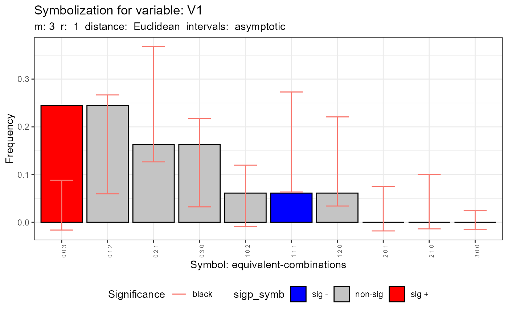#> [[1]]#> #> [[2]]#>#> [[1]] #> #> Qp (asymptotic distrib.) for standard symbolization based on #> permutations #> #> data: Variable V1 m = 3 r = 1 #> Qp = 96.388, df = 26, p-value = 5.08e-10 #> #> #> [[2]] #> #> Qc (asymptotic distrib.) for equivalent symbolization based on #> combinations #> #> data: Variable V1 m = 3 r = 1 #> Qc = 43.509, df = 9, p-value = 1.738e-06 #> #> #> attr(,"class") #> [1] "spqtest" "list"#> <div id="yfiioupbhk" style="overflow-x:auto;overflow-y:auto;width:auto;height:auto;"> #> <style>html { #> font-family: -apple-system, BlinkMacSystemFont, 'Segoe UI', Roboto, Oxygen, Ubuntu, Cantarell, 'Helvetica Neue', 'Fira Sans', 'Droid Sans', Arial, sans-serif; #> } #> #> #yfiioupbhk .gt_table { #> display: table; #> border-collapse: collapse; #> margin-left: auto; #> margin-right: auto; #> color: #333333; #> font-size: 16px; #> font-weight: normal; #> font-style: normal; #> background-color: #FFFFFF; #> width: auto; #> border-top-style: solid; #> border-top-width: 2px; #> border-top-color: #A8A8A8; #> border-right-style: none; #> border-right-width: 2px; #> border-right-color: #D3D3D3; #> border-bottom-style: solid; #> border-bottom-width: 2px; #> border-bottom-color: #A8A8A8; #> border-left-style: none; #> border-left-width: 2px; #> border-left-color: #D3D3D3; #> } #> #> #yfiioupbhk .gt_heading { #> background-color: #FFFFFF; #> text-align: center; #> border-bottom-color: #FFFFFF; #> border-left-style: none; #> border-left-width: 1px; #> border-left-color: #D3D3D3; #> border-right-style: none; #> border-right-width: 1px; #> border-right-color: #D3D3D3; #> } #> #> #yfiioupbhk .gt_title { #> color: #333333; #> font-size: 125%; #> font-weight: initial; #> padding-top: 4px; #> padding-bottom: 4px; #> border-bottom-color: #FFFFFF; #> border-bottom-width: 0; #> } #> #> #yfiioupbhk .gt_subtitle { #> color: #333333; #> font-size: 85%; #> font-weight: initial; #> padding-top: 0; #> padding-bottom: 6px; #> border-top-color: #FFFFFF; #> border-top-width: 0; #> } #> #> #yfiioupbhk .gt_bottom_border { #> border-bottom-style: solid; #> border-bottom-width: 2px; #> border-bottom-color: #D3D3D3; #> } #> #> #yfiioupbhk .gt_col_headings { #> border-top-style: solid; #> border-top-width: 2px; #> border-top-color: #D3D3D3; #> border-bottom-style: solid; #> border-bottom-width: 2px; #> border-bottom-color: #D3D3D3; #> border-left-style: none; #> border-left-width: 1px; #> border-left-color: #D3D3D3; #> border-right-style: none; #> border-right-width: 1px; #> border-right-color: #D3D3D3; #> } #> #> #yfiioupbhk .gt_col_heading { #> color: #333333; #> background-color: #FFFFFF; #> font-size: 100%; #> font-weight: normal; #> text-transform: inherit; #> border-left-style: none; #> border-left-width: 1px; #> border-left-color: #D3D3D3; #> border-right-style: none; #> border-right-width: 1px; #> border-right-color: #D3D3D3; #> vertical-align: bottom; #> padding-top: 5px; #> padding-bottom: 6px; #> padding-left: 5px; #> padding-right: 5px; #> overflow-x: hidden; #> } #> #> #yfiioupbhk .gt_column_spanner_outer { #> color: #333333; #> background-color: #FFFFFF; #> font-size: 100%; #> font-weight: normal; #> text-transform: inherit; #> padding-top: 0; #> padding-bottom: 0; #> padding-left: 4px; #> padding-right: 4px; #> } #> #> #yfiioupbhk .gt_column_spanner_outer:first-child { #> padding-left: 0; #> } #> #> #yfiioupbhk .gt_column_spanner_outer:last-child { #> padding-right: 0; #> } #> #> #yfiioupbhk .gt_column_spanner { #> border-bottom-style: solid; #> border-bottom-width: 2px; #> border-bottom-color: #D3D3D3; #> vertical-align: bottom; #> padding-top: 5px; #> padding-bottom: 5px; #> overflow-x: hidden; #> display: inline-block; #> width: 100%; #> } #> #> #yfiioupbhk .gt_group_heading { #> padding: 8px; #> color: #333333; #> background-color: #FFFFFF; #> font-size: 100%; #> font-weight: initial; #> text-transform: inherit; #> border-top-style: solid; #> border-top-width: 2px; #> border-top-color: #D3D3D3; #> border-bottom-style: solid; #> border-bottom-width: 2px; #> border-bottom-color: #D3D3D3; #> border-left-style: none; #> border-left-width: 1px; #> border-left-color: #D3D3D3; #> border-right-style: none; #> border-right-width: 1px; #> border-right-color: #D3D3D3; #> vertical-align: middle; #> } #> #> #yfiioupbhk .gt_empty_group_heading { #> padding: 0.5px; #> color: #333333; #> background-color: #FFFFFF; #> font-size: 100%; #> font-weight: initial; #> border-top-style: solid; #> border-top-width: 2px; #> border-top-color: #D3D3D3; #> border-bottom-style: solid; #> border-bottom-width: 2px; #> border-bottom-color: #D3D3D3; #> vertical-align: middle; #> } #> #> #yfiioupbhk .gt_from_md > :first-child { #> margin-top: 0; #> } #> #> #yfiioupbhk .gt_from_md > :last-child { #> margin-bottom: 0; #> } #> #> #yfiioupbhk .gt_row { #> padding-top: 8px; #> padding-bottom: 8px; #> padding-left: 5px; #> padding-right: 5px; #> margin: 10px; #> border-top-style: solid; #> border-top-width: 1px; #> border-top-color: #D3D3D3; #> border-left-style: none; #> border-left-width: 1px; #> border-left-color: #D3D3D3; #> border-right-style: none; #> border-right-width: 1px; #> border-right-color: #D3D3D3; #> vertical-align: middle; #> overflow-x: hidden; #> } #> #> #yfiioupbhk .gt_stub { #> color: #333333; #> background-color: #FFFFFF; #> font-size: 100%; #> font-weight: initial; #> text-transform: inherit; #> border-right-style: solid; #> border-right-width: 2px; #> border-right-color: #D3D3D3; #> padding-left: 12px; #> } #> #> #yfiioupbhk .gt_summary_row { #> color: #333333; #> background-color: #FFFFFF; #> text-transform: inherit; #> padding-top: 8px; #> padding-bottom: 8px; #> padding-left: 5px; #> padding-right: 5px; #> } #> #> #yfiioupbhk .gt_first_summary_row { #> padding-top: 8px; #> padding-bottom: 8px; #> padding-left: 5px; #> padding-right: 5px; #> border-top-style: solid; #> border-top-width: 2px; #> border-top-color: #D3D3D3; #> } #> #> #yfiioupbhk .gt_grand_summary_row { #> color: #333333; #> background-color: #FFFFFF; #> text-transform: inherit; #> padding-top: 8px; #> padding-bottom: 8px; #> padding-left: 5px; #> padding-right: 5px; #> } #> #> #yfiioupbhk .gt_first_grand_summary_row { #> padding-top: 8px; #> padding-bottom: 8px; #> padding-left: 5px; #> padding-right: 5px; #> border-top-style: double; #> border-top-width: 6px; #> border-top-color: #D3D3D3; #> } #> #> #yfiioupbhk .gt_striped { #> background-color: rgba(128, 128, 128, 0.05); #> } #> #> #yfiioupbhk .gt_table_body { #> border-top-style: solid; #> border-top-width: 2px; #> border-top-color: #D3D3D3; #> border-bottom-style: solid; #> border-bottom-width: 2px; #> border-bottom-color: #D3D3D3; #> } #> #> #yfiioupbhk .gt_footnotes { #> color: #333333; #> background-color: #FFFFFF; #> border-bottom-style: none; #> border-bottom-width: 2px; #> border-bottom-color: #D3D3D3; #> border-left-style: none; #> border-left-width: 2px; #> border-left-color: #D3D3D3; #> border-right-style: none; #> border-right-width: 2px; #> border-right-color: #D3D3D3; #> } #> #> #yfiioupbhk .gt_footnote { #> margin: 0px; #> font-size: 90%; #> padding: 4px; #> } #> #> #yfiioupbhk .gt_sourcenotes { #> color: #333333; #> background-color: #FFFFFF; #> border-bottom-style: none; #> border-bottom-width: 2px; #> border-bottom-color: #D3D3D3; #> border-left-style: none; #> border-left-width: 2px; #> border-left-color: #D3D3D3; #> border-right-style: none; #> border-right-width: 2px; #> border-right-color: #D3D3D3; #> } #> #> #yfiioupbhk .gt_sourcenote { #> font-size: 90%; #> padding: 4px; #> } #> #> #yfiioupbhk .gt_left { #> text-align: left; #> } #> #> #yfiioupbhk .gt_center { #> text-align: center; #> } #> #> #yfiioupbhk .gt_right { #> text-align: right; #> font-variant-numeric: tabular-nums; #> } #> #> #yfiioupbhk .gt_font_normal { #> font-weight: normal; #> } #> #> #yfiioupbhk .gt_font_bold { #> font-weight: bold; #> } #> #> #yfiioupbhk .gt_font_italic { #> font-style: italic; #> } #> #> #yfiioupbhk .gt_super { #> font-size: 65%; #> } #> #> #yfiioupbhk .gt_footnote_marks { #> font-style: italic; #> font-weight: normal; #> font-size: 65%; #> } #> </style> #> <table class="gt_table"> #> <thead class="gt_header"> #> <tr> #> <th colspan="9" class="gt_heading gt_title gt_font_normal" style>Qualitative Dependence Test (Q)</th> #> </tr> #> <tr> #> <th colspan="9" class="gt_heading gt_subtitle gt_font_normal gt_bottom_border" style>Distribution: mc. Distance: Euclidean</th> #> </tr> #> </thead> #> <thead class="gt_col_headings"> #> <tr> #> <th class="gt_col_heading gt_columns_bottom_border gt_right" rowspan="1" colspan="1">Q</th> #> <th class="gt_col_heading gt_columns_bottom_border gt_right" rowspan="1" colspan="1">p.value</th> #> <th class="gt_col_heading gt_columns_bottom_border gt_right" rowspan="1" colspan="1">k</th> #> <th class="gt_col_heading gt_columns_bottom_border gt_right" rowspan="1" colspan="1">N</th> #> <th class="gt_col_heading gt_columns_bottom_border gt_right" rowspan="1" colspan="1">m</th> #> <th class="gt_col_heading gt_columns_bottom_border gt_right" rowspan="1" colspan="1">R</th> #> <th class="gt_col_heading gt_columns_bottom_border gt_right" rowspan="1" colspan="1">n</th> #> <th class="gt_col_heading gt_columns_bottom_border gt_right" rowspan="1" colspan="1">R/n</th> #> <th class="gt_col_heading gt_columns_bottom_border gt_right" rowspan="1" colspan="1">5k^m</th> #> </tr> #> </thead> #> <tbody class="gt_table_body"> #> <tr class="gt_group_heading_row"> #> <td colspan="9" class="gt_group_heading">V1 - standard-permutations</td> #> </tr> #> <tr><td class="gt_row gt_right">192.57</td> #> <td class="gt_row gt_right">0.20800</td> #> <td class="gt_row gt_right">3</td> #> <td class="gt_row gt_right">100</td> #> <td class="gt_row gt_right">3</td> #> <td class="gt_row gt_right">100</td> #> <td class="gt_row gt_right">27</td> #> <td class="gt_row gt_right">3.70</td> #> <td class="gt_row gt_right">135</td></tr> #> <tr class="gt_group_heading_row"> #> <td colspan="9" class="gt_group_heading">V1 - equivalent-combinations</td> #> </tr> #> <tr><td class="gt_row gt_right">19.76</td> #> <td class="gt_row gt_right">0.25900</td> #> <td class="gt_row gt_right">3</td> #> <td class="gt_row gt_right">100</td> #> <td class="gt_row gt_right">3</td> #> <td class="gt_row gt_right">100</td> #> <td class="gt_row gt_right">10</td> #> <td class="gt_row gt_right">10.00</td> #> <td class="gt_row gt_right">135</td></tr> #> </tbody> #> #> #> </table> #> </div>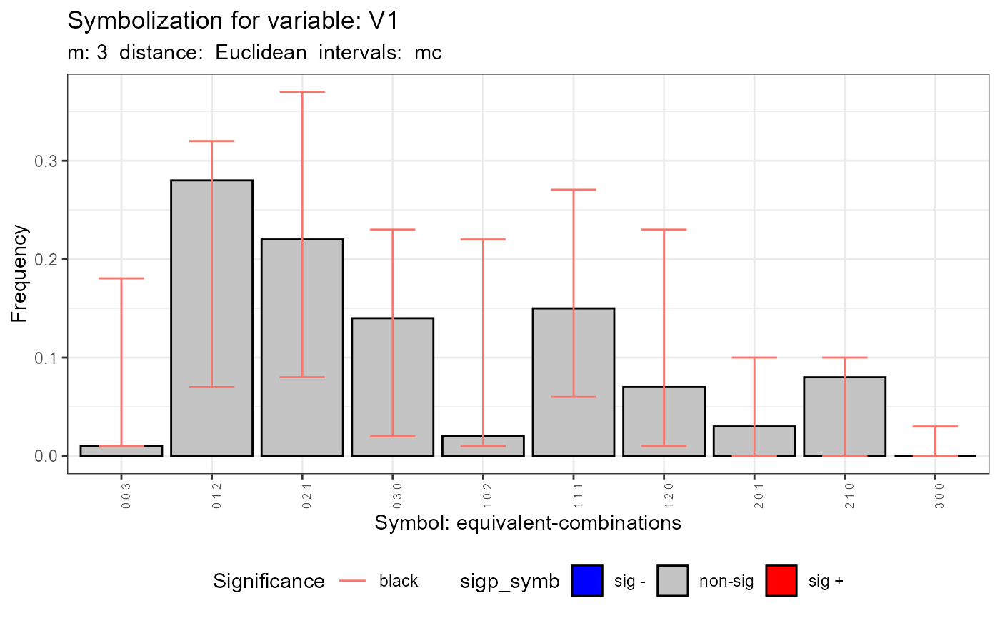#> [[1]]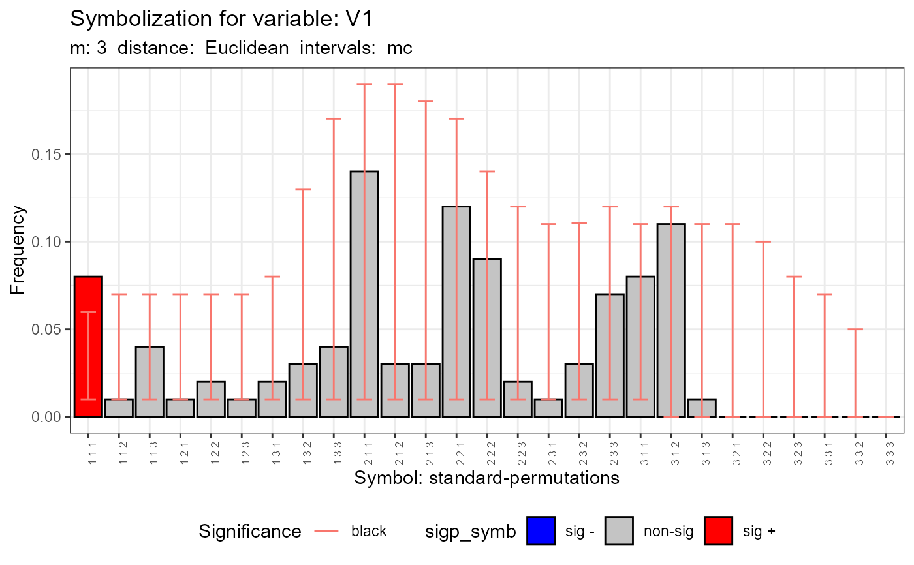#> #> [[2]]#>#> [[1]] #> #> Qp (mc distrib.) for symbolization based on permutations #> #> data: Variable V1 m = 3 r = 2 #> Qp = 192.57, df = NA, p-value = 0.208 #> #> #> [[2]] #> #> Qc (mc distrib.) for symbolization based on combinations #> #> data: Variable V1 m = 3 r = 2 #> Qc = 19.765, df = NA, p-value = 0.259 #> #> #> attr(,"class") #> [1] "spqtest" "list"# Case 2: With a sf object rm(list = ls()) data("FastFood") f1 <- ~ Type q.test <- Q.test(formula = f1, data = FastFood.sf, m = c(3, 4), r = c(1, 2, 3), control = list(distance ="Euclidean")) summary(q.test)#> <div id="kxdtzwdoda" style="overflow-x:auto;overflow-y:auto;width:auto;height:auto;"> #> <style>html { #> font-family: -apple-system, BlinkMacSystemFont, 'Segoe UI', Roboto, Oxygen, Ubuntu, Cantarell, 'Helvetica Neue', 'Fira Sans', 'Droid Sans', Arial, sans-serif; #> } #> #> #kxdtzwdoda .gt_table { #> display: table; #> border-collapse: collapse; #> margin-left: auto; #> margin-right: auto; #> color: #333333; #> font-size: 16px; #> font-weight: normal; #> font-style: normal; #> background-color: #FFFFFF; #> width: auto; #> border-top-style: solid; #> border-top-width: 2px; #> border-top-color: #A8A8A8; #> border-right-style: none; #> border-right-width: 2px; #> border-right-color: #D3D3D3; #> border-bottom-style: solid; #> border-bottom-width: 2px; #> border-bottom-color: #A8A8A8; #> border-left-style: none; #> border-left-width: 2px; #> border-left-color: #D3D3D3; #> } #> #> #kxdtzwdoda .gt_heading { #> background-color: #FFFFFF; #> text-align: center; #> border-bottom-color: #FFFFFF; #> border-left-style: none; #> border-left-width: 1px; #> border-left-color: #D3D3D3; #> border-right-style: none; #> border-right-width: 1px; #> border-right-color: #D3D3D3; #> } #> #> #kxdtzwdoda .gt_title { #> color: #333333; #> font-size: 125%; #> font-weight: initial; #> padding-top: 4px; #> padding-bottom: 4px; #> border-bottom-color: #FFFFFF; #> border-bottom-width: 0; #> } #> #> #kxdtzwdoda .gt_subtitle { #> color: #333333; #> font-size: 85%; #> font-weight: initial; #> padding-top: 0; #> padding-bottom: 6px; #> border-top-color: #FFFFFF; #> border-top-width: 0; #> } #> #> #kxdtzwdoda .gt_bottom_border { #> border-bottom-style: solid; #> border-bottom-width: 2px; #> border-bottom-color: #D3D3D3; #> } #> #> #kxdtzwdoda .gt_col_headings { #> border-top-style: solid; #> border-top-width: 2px; #> border-top-color: #D3D3D3; #> border-bottom-style: solid; #> border-bottom-width: 2px; #> border-bottom-color: #D3D3D3; #> border-left-style: none; #> border-left-width: 1px; #> border-left-color: #D3D3D3; #> border-right-style: none; #> border-right-width: 1px; #> border-right-color: #D3D3D3; #> } #> #> #kxdtzwdoda .gt_col_heading { #> color: #333333; #> background-color: #FFFFFF; #> font-size: 100%; #> font-weight: normal; #> text-transform: inherit; #> border-left-style: none; #> border-left-width: 1px; #> border-left-color: #D3D3D3; #> border-right-style: none; #> border-right-width: 1px; #> border-right-color: #D3D3D3; #> vertical-align: bottom; #> padding-top: 5px; #> padding-bottom: 6px; #> padding-left: 5px; #> padding-right: 5px; #> overflow-x: hidden; #> } #> #> #kxdtzwdoda .gt_column_spanner_outer { #> color: #333333; #> background-color: #FFFFFF; #> font-size: 100%; #> font-weight: normal; #> text-transform: inherit; #> padding-top: 0; #> padding-bottom: 0; #> padding-left: 4px; #> padding-right: 4px; #> } #> #> #kxdtzwdoda .gt_column_spanner_outer:first-child { #> padding-left: 0; #> } #> #> #kxdtzwdoda .gt_column_spanner_outer:last-child { #> padding-right: 0; #> } #> #> #kxdtzwdoda .gt_column_spanner { #> border-bottom-style: solid; #> border-bottom-width: 2px; #> border-bottom-color: #D3D3D3; #> vertical-align: bottom; #> padding-top: 5px; #> padding-bottom: 5px; #> overflow-x: hidden; #> display: inline-block; #> width: 100%; #> } #> #> #kxdtzwdoda .gt_group_heading { #> padding: 8px; #> color: #333333; #> background-color: #FFFFFF; #> font-size: 100%; #> font-weight: initial; #> text-transform: inherit; #> border-top-style: solid; #> border-top-width: 2px; #> border-top-color: #D3D3D3; #> border-bottom-style: solid; #> border-bottom-width: 2px; #> border-bottom-color: #D3D3D3; #> border-left-style: none; #> border-left-width: 1px; #> border-left-color: #D3D3D3; #> border-right-style: none; #> border-right-width: 1px; #> border-right-color: #D3D3D3; #> vertical-align: middle; #> } #> #> #kxdtzwdoda .gt_empty_group_heading { #> padding: 0.5px; #> color: #333333; #> background-color: #FFFFFF; #> font-size: 100%; #> font-weight: initial; #> border-top-style: solid; #> border-top-width: 2px; #> border-top-color: #D3D3D3; #> border-bottom-style: solid; #> border-bottom-width: 2px; #> border-bottom-color: #D3D3D3; #> vertical-align: middle; #> } #> #> #kxdtzwdoda .gt_from_md > :first-child { #> margin-top: 0; #> } #> #> #kxdtzwdoda .gt_from_md > :last-child { #> margin-bottom: 0; #> } #> #> #kxdtzwdoda .gt_row { #> padding-top: 8px; #> padding-bottom: 8px; #> padding-left: 5px; #> padding-right: 5px; #> margin: 10px; #> border-top-style: solid; #> border-top-width: 1px; #> border-top-color: #D3D3D3; #> border-left-style: none; #> border-left-width: 1px; #> border-left-color: #D3D3D3; #> border-right-style: none; #> border-right-width: 1px; #> border-right-color: #D3D3D3; #> vertical-align: middle; #> overflow-x: hidden; #> } #> #> #kxdtzwdoda .gt_stub { #> color: #333333; #> background-color: #FFFFFF; #> font-size: 100%; #> font-weight: initial; #> text-transform: inherit; #> border-right-style: solid; #> border-right-width: 2px; #> border-right-color: #D3D3D3; #> padding-left: 12px; #> } #> #> #kxdtzwdoda .gt_summary_row { #> color: #333333; #> background-color: #FFFFFF; #> text-transform: inherit; #> padding-top: 8px; #> padding-bottom: 8px; #> padding-left: 5px; #> padding-right: 5px; #> } #> #> #kxdtzwdoda .gt_first_summary_row { #> padding-top: 8px; #> padding-bottom: 8px; #> padding-left: 5px; #> padding-right: 5px; #> border-top-style: solid; #> border-top-width: 2px; #> border-top-color: #D3D3D3; #> } #> #> #kxdtzwdoda .gt_grand_summary_row { #> color: #333333; #> background-color: #FFFFFF; #> text-transform: inherit; #> padding-top: 8px; #> padding-bottom: 8px; #> padding-left: 5px; #> padding-right: 5px; #> } #> #> #kxdtzwdoda .gt_first_grand_summary_row { #> padding-top: 8px; #> padding-bottom: 8px; #> padding-left: 5px; #> padding-right: 5px; #> border-top-style: double; #> border-top-width: 6px; #> border-top-color: #D3D3D3; #> } #> #> #kxdtzwdoda .gt_striped { #> background-color: rgba(128, 128, 128, 0.05); #> } #> #> #kxdtzwdoda .gt_table_body { #> border-top-style: solid; #> border-top-width: 2px; #> border-top-color: #D3D3D3; #> border-bottom-style: solid; #> border-bottom-width: 2px; #> border-bottom-color: #D3D3D3; #> } #> #> #kxdtzwdoda .gt_footnotes { #> color: #333333; #> background-color: #FFFFFF; #> border-bottom-style: none; #> border-bottom-width: 2px; #> border-bottom-color: #D3D3D3; #> border-left-style: none; #> border-left-width: 2px; #> border-left-color: #D3D3D3; #> border-right-style: none; #> border-right-width: 2px; #> border-right-color: #D3D3D3; #> } #> #> #kxdtzwdoda .gt_footnote { #> margin: 0px; #> font-size: 90%; #> padding: 4px; #> } #> #> #kxdtzwdoda .gt_sourcenotes { #> color: #333333; #> background-color: #FFFFFF; #> border-bottom-style: none; #> border-bottom-width: 2px; #> border-bottom-color: #D3D3D3; #> border-left-style: none; #> border-left-width: 2px; #> border-left-color: #D3D3D3; #> border-right-style: none; #> border-right-width: 2px; #> border-right-color: #D3D3D3; #> } #> #> #kxdtzwdoda .gt_sourcenote { #> font-size: 90%; #> padding: 4px; #> } #> #> #kxdtzwdoda .gt_left { #> text-align: left; #> } #> #> #kxdtzwdoda .gt_center { #> text-align: center; #> } #> #> #kxdtzwdoda .gt_right { #> text-align: right; #> font-variant-numeric: tabular-nums; #> } #> #> #kxdtzwdoda .gt_font_normal { #> font-weight: normal; #> } #> #> #kxdtzwdoda .gt_font_bold { #> font-weight: bold; #> } #> #> #kxdtzwdoda .gt_font_italic { #> font-style: italic; #> } #> #> #kxdtzwdoda .gt_super { #> font-size: 65%; #> } #> #> #kxdtzwdoda .gt_footnote_marks { #> font-style: italic; #> font-weight: normal; #> font-size: 65%; #> } #> </style> #> <table class="gt_table"> #> <thead class="gt_header"> #> <tr> #> <th colspan="11" class="gt_heading gt_title gt_font_normal" style>Qualitative Dependence Test (Q)</th> #> </tr> #> <tr> #> <th colspan="11" class="gt_heading gt_subtitle gt_font_normal gt_bottom_border" style>Distribution: asymptotic. Distance: Euclidean</th> #> </tr> #> </thead> #> <thead class="gt_col_headings"> #> <tr> #> <th class="gt_col_heading gt_columns_bottom_border gt_right" rowspan="1" colspan="1">Q</th> #> <th class="gt_col_heading gt_columns_bottom_border gt_right" rowspan="1" colspan="1">df</th> #> <th class="gt_col_heading gt_columns_bottom_border gt_right" rowspan="1" colspan="1">p.value</th> #> <th class="gt_col_heading gt_columns_bottom_border gt_right" rowspan="1" colspan="1">k</th> #> <th class="gt_col_heading gt_columns_bottom_border gt_right" rowspan="1" colspan="1">N</th> #> <th class="gt_col_heading gt_columns_bottom_border gt_right" rowspan="1" colspan="1">m</th> #> <th class="gt_col_heading gt_columns_bottom_border gt_right" rowspan="1" colspan="1">r</th> #> <th class="gt_col_heading gt_columns_bottom_border gt_right" rowspan="1" colspan="1">R</th> #> <th class="gt_col_heading gt_columns_bottom_border gt_right" rowspan="1" colspan="1">n</th> #> <th class="gt_col_heading gt_columns_bottom_border gt_right" rowspan="1" colspan="1">R/n</th> #> <th class="gt_col_heading gt_columns_bottom_border gt_right" rowspan="1" colspan="1">5k^m</th> #> </tr> #> </thead> #> <tbody class="gt_table_body"> #> <tr class="gt_group_heading_row"> #> <td colspan="11" class="gt_group_heading">Type - standard-permutations</td> #> </tr> #> <tr><td class="gt_row gt_right">18.45</td> #> <td class="gt_row gt_right">26</td> #> <td class="gt_row gt_right">0.85897</td> #> <td class="gt_row gt_right">3</td> #> <td class="gt_row gt_right">877</td> #> <td class="gt_row gt_right">3</td> #> <td class="gt_row gt_right">1</td> #> <td class="gt_row gt_right">438</td> #> <td class="gt_row gt_right">27</td> #> <td class="gt_row gt_right">16.22</td> #> <td class="gt_row gt_right">135</td></tr> #> <tr><td class="gt_row gt_right">11.87</td> #> <td class="gt_row gt_right">26</td> #> <td class="gt_row gt_right">0.99188</td> #> <td class="gt_row gt_right">3</td> #> <td class="gt_row gt_right">877</td> #> <td class="gt_row gt_right">3</td> #> <td class="gt_row gt_right">2</td> #> <td class="gt_row gt_right">875</td> #> <td class="gt_row gt_right">27</td> #> <td class="gt_row gt_right">32.41</td> #> <td class="gt_row gt_right">135</td></tr> #> <tr><td class="gt_row gt_right">85.20</td> #> <td class="gt_row gt_right">80</td> #> <td class="gt_row gt_right">0.32450</td> #> <td class="gt_row gt_right">3</td> #> <td class="gt_row gt_right">877</td> #> <td class="gt_row gt_right">4</td> #> <td class="gt_row gt_right">1</td> #> <td class="gt_row gt_right">292</td> #> <td class="gt_row gt_right">81</td> #> <td class="gt_row gt_right">3.60</td> #> <td class="gt_row gt_right">405</td></tr> #> <tr><td class="gt_row gt_right">65.58</td> #> <td class="gt_row gt_right">80</td> #> <td class="gt_row gt_right">0.87764</td> #> <td class="gt_row gt_right">3</td> #> <td class="gt_row gt_right">877</td> #> <td class="gt_row gt_right">4</td> #> <td class="gt_row gt_right">2</td> #> <td class="gt_row gt_right">437</td> #> <td class="gt_row gt_right">81</td> #> <td class="gt_row gt_right">5.40</td> #> <td class="gt_row gt_right">405</td></tr> #> <tr><td class="gt_row gt_right">61.60</td> #> <td class="gt_row gt_right">80</td> #> <td class="gt_row gt_right">0.93701</td> #> <td class="gt_row gt_right">3</td> #> <td class="gt_row gt_right">877</td> #> <td class="gt_row gt_right">4</td> #> <td class="gt_row gt_right">3</td> #> <td class="gt_row gt_right">874</td> #> <td class="gt_row gt_right">81</td> #> <td class="gt_row gt_right">10.79</td> #> <td class="gt_row gt_right">405</td></tr> #> <tr class="gt_group_heading_row"> #> <td colspan="11" class="gt_group_heading">Type - equivalent-combinations</td> #> </tr> #> <tr><td class="gt_row gt_right">4.47</td> #> <td class="gt_row gt_right">9</td> #> <td class="gt_row gt_right">0.87786</td> #> <td class="gt_row gt_right">3</td> #> <td class="gt_row gt_right">877</td> #> <td class="gt_row gt_right">3</td> #> <td class="gt_row gt_right">1</td> #> <td class="gt_row gt_right">438</td> #> <td class="gt_row gt_right">10</td> #> <td class="gt_row gt_right">43.80</td> #> <td class="gt_row gt_right">135</td></tr> #> <tr><td class="gt_row gt_right">2.69</td> #> <td class="gt_row gt_right">9</td> #> <td class="gt_row gt_right">0.97547</td> #> <td class="gt_row gt_right">3</td> #> <td class="gt_row gt_right">877</td> #> <td class="gt_row gt_right">3</td> #> <td class="gt_row gt_right">2</td> #> <td class="gt_row gt_right">875</td> #> <td class="gt_row gt_right">10</td> #> <td class="gt_row gt_right">87.50</td> #> <td class="gt_row gt_right">135</td></tr> #> <tr><td class="gt_row gt_right">117.14</td> #> <td class="gt_row gt_right">14</td> #> <td class="gt_row gt_right">0.00000</td> #> <td class="gt_row gt_right">3</td> #> <td class="gt_row gt_right">877</td> #> <td class="gt_row gt_right">4</td> #> <td class="gt_row gt_right">1</td> #> <td class="gt_row gt_right">292</td> #> <td class="gt_row gt_right">15</td> #> <td class="gt_row gt_right">19.47</td> #> <td class="gt_row gt_right">405</td></tr> #> <tr><td class="gt_row gt_right">7.83</td> #> <td class="gt_row gt_right">14</td> #> <td class="gt_row gt_right">0.89808</td> #> <td class="gt_row gt_right">3</td> #> <td class="gt_row gt_right">877</td> #> <td class="gt_row gt_right">4</td> #> <td class="gt_row gt_right">2</td> #> <td class="gt_row gt_right">437</td> #> <td class="gt_row gt_right">15</td> #> <td class="gt_row gt_right">29.13</td> #> <td class="gt_row gt_right">405</td></tr> #> <tr><td class="gt_row gt_right">15.85</td> #> <td class="gt_row gt_right">14</td> #> <td class="gt_row gt_right">0.32283</td> #> <td class="gt_row gt_right">3</td> #> <td class="gt_row gt_right">877</td> #> <td class="gt_row gt_right">4</td> #> <td class="gt_row gt_right">3</td> #> <td class="gt_row gt_right">874</td> #> <td class="gt_row gt_right">15</td> #> <td class="gt_row gt_right">58.27</td> #> <td class="gt_row gt_right">405</td></tr> #> </tbody> #> #> #> </table> #> </div>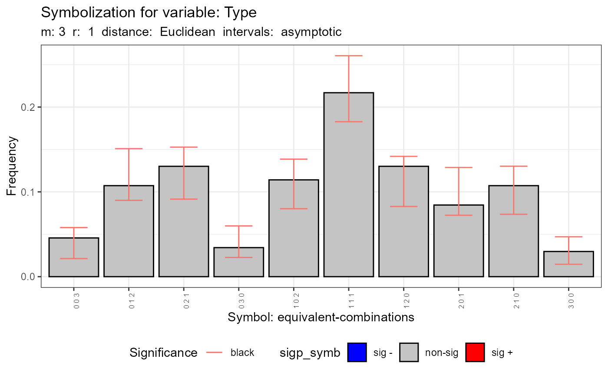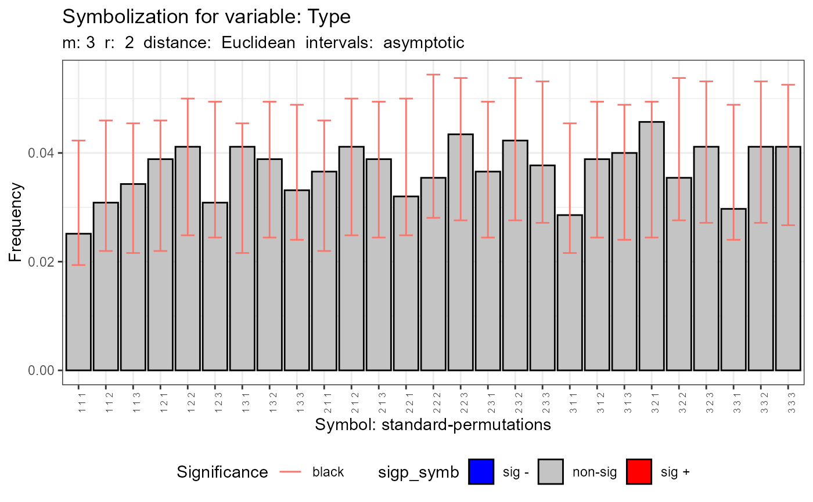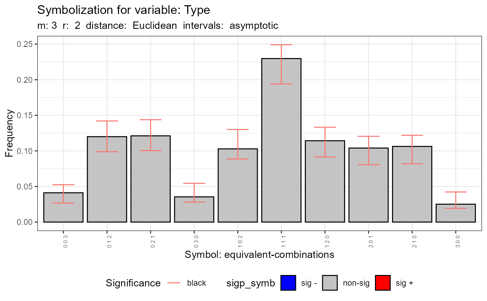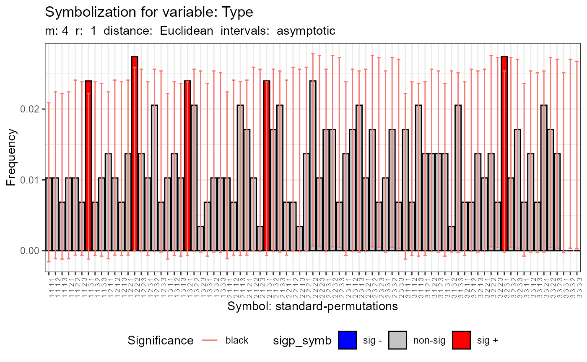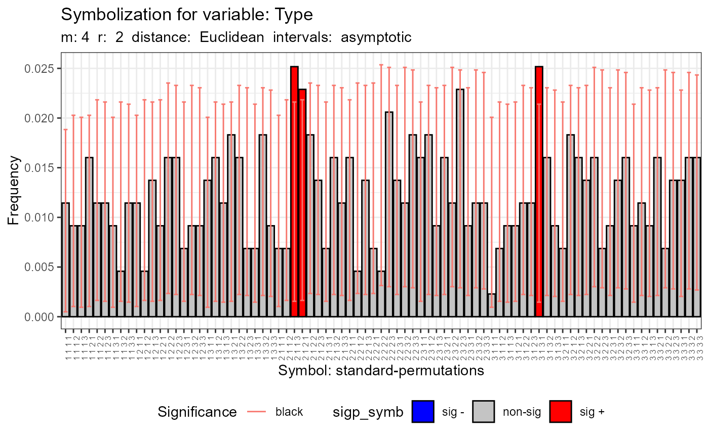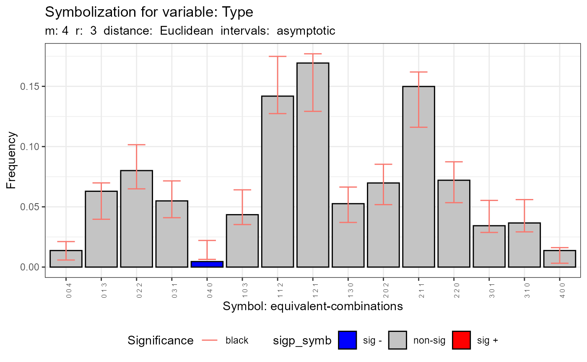#> [[1]]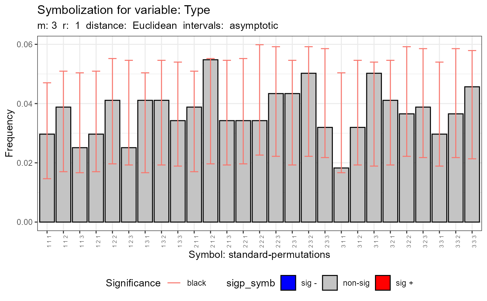#> #> [[2]]#> #> [[3]]#> #> [[4]]#> #> [[5]]#> #> [[6]]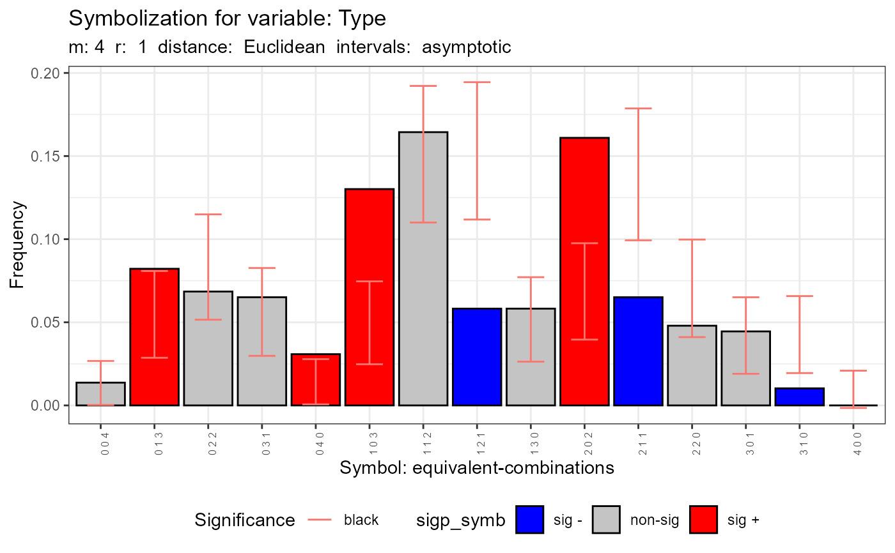#> #> [[7]]#> #> [[8]]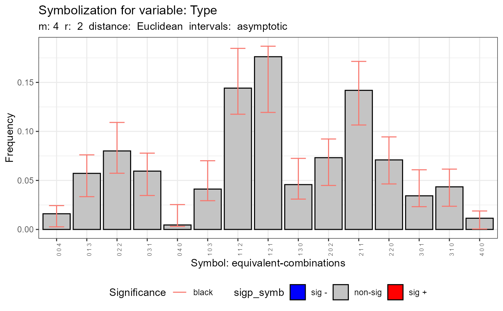#> #> [[9]]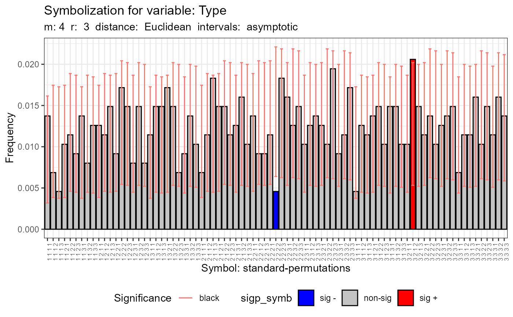#> #> [[10]]#>#> [[1]] #> #> Qp (asymptotic distrib.) for standard symbolization based on #> permutations #> #> data: Variable Type m = 3 r = 1 #> Qp = 18.445, df = 26, p-value = 0.859 #> #> #> [[2]] #> #> Qc (asymptotic distrib.) for equivalent symbolization based on #> combinations #> #> data: Variable Type m = 3 r = 1 #> Qc = 4.4699, df = 9, p-value = 0.8779 #> #> #> [[3]] #> #> Qp (asymptotic distrib.) for standard symbolization based on #> permutations #> #> data: Variable Type m = 3 r = 2 #> Qp = 11.871, df = 26, p-value = 0.9919 #> #> #> [[4]] #> #> Qc (asymptotic distrib.) for equivalent symbolization based on #> combinations #> #> data: Variable Type m = 3 r = 2 #> Qc = 2.6856, df = 9, p-value = 0.9755 #> #> #> [[5]] #> #> Qp (asymptotic distrib.) for standard symbolization based on #> permutations #> #> data: Variable Type m = 4 r = 1 #> Qp = 85.202, df = 80, p-value = 0.3245 #> #> #> [[6]] #> #> Qc (asymptotic distrib.) for equivalent symbolization based on #> combinations #> #> data: Variable Type m = 4 r = 1 #> Qc = 117.14, df = 14, p-value < 2.2e-16 #> #> #> [[7]] #> #> Qp (asymptotic distrib.) for standard symbolization based on #> permutations #> #> data: Variable Type m = 4 r = 2 #> Qp = 65.579, df = 80, p-value = 0.8776 #> #> #> [[8]] #> #> Qc (asymptotic distrib.) for equivalent symbolization based on #> combinations #> #> data: Variable Type m = 4 r = 2 #> Qc = 7.8283, df = 14, p-value = 0.8981 #> #> #> [[9]] #> #> Qp (asymptotic distrib.) for standard symbolization based on #> permutations #> #> data: Variable Type m = 4 r = 3 #> Qp = 61.601, df = 80, p-value = 0.937 #> #> #> [[10]] #> #> Qc (asymptotic distrib.) for equivalent symbolization based on #> combinations #> #> data: Variable Type m = 4 r = 3 #> Qc = 15.847, df = 14, p-value = 0.3228 #> #> #> attr(,"class") #> [1] "spqtest" "list"# Case 3: With a sf object with isolated areas rm(list = ls()) data("Spain") f1 <- ~ Older65 + MenWoman q.test <- Q.test(formula = f1, data = spain.sf, m = 3, r = 1, control = list(seedinit = 1111)) summary(q.test)#> <div id="kxdtzwdoda" style="overflow-x:auto;overflow-y:auto;width:auto;height:auto;"> #> <style>html { #> font-family: -apple-system, BlinkMacSystemFont, 'Segoe UI', Roboto, Oxygen, Ubuntu, Cantarell, 'Helvetica Neue', 'Fira Sans', 'Droid Sans', Arial, sans-serif; #> } #> #> #kxdtzwdoda .gt_table { #> display: table; #> border-collapse: collapse; #> margin-left: auto; #> margin-right: auto; #> color: #333333; #> font-size: 16px; #> font-weight: normal; #> font-style: normal; #> background-color: #FFFFFF; #> width: auto; #> border-top-style: solid; #> border-top-width: 2px; #> border-top-color: #A8A8A8; #> border-right-style: none; #> border-right-width: 2px; #> border-right-color: #D3D3D3; #> border-bottom-style: solid; #> border-bottom-width: 2px; #> border-bottom-color: #A8A8A8; #> border-left-style: none; #> border-left-width: 2px; #> border-left-color: #D3D3D3; #> } #> #> #kxdtzwdoda .gt_heading { #> background-color: #FFFFFF; #> text-align: center; #> border-bottom-color: #FFFFFF; #> border-left-style: none; #> border-left-width: 1px; #> border-left-color: #D3D3D3; #> border-right-style: none; #> border-right-width: 1px; #> border-right-color: #D3D3D3; #> } #> #> #kxdtzwdoda .gt_title { #> color: #333333; #> font-size: 125%; #> font-weight: initial; #> padding-top: 4px; #> padding-bottom: 4px; #> border-bottom-color: #FFFFFF; #> border-bottom-width: 0; #> } #> #> #kxdtzwdoda .gt_subtitle { #> color: #333333; #> font-size: 85%; #> font-weight: initial; #> padding-top: 0; #> padding-bottom: 6px; #> border-top-color: #FFFFFF; #> border-top-width: 0; #> } #> #> #kxdtzwdoda .gt_bottom_border { #> border-bottom-style: solid; #> border-bottom-width: 2px; #> border-bottom-color: #D3D3D3; #> } #> #> #kxdtzwdoda .gt_col_headings { #> border-top-style: solid; #> border-top-width: 2px; #> border-top-color: #D3D3D3; #> border-bottom-style: solid; #> border-bottom-width: 2px; #> border-bottom-color: #D3D3D3; #> border-left-style: none; #> border-left-width: 1px; #> border-left-color: #D3D3D3; #> border-right-style: none; #> border-right-width: 1px; #> border-right-color: #D3D3D3; #> } #> #> #kxdtzwdoda .gt_col_heading { #> color: #333333; #> background-color: #FFFFFF; #> font-size: 100%; #> font-weight: normal; #> text-transform: inherit; #> border-left-style: none; #> border-left-width: 1px; #> border-left-color: #D3D3D3; #> border-right-style: none; #> border-right-width: 1px; #> border-right-color: #D3D3D3; #> vertical-align: bottom; #> padding-top: 5px; #> padding-bottom: 6px; #> padding-left: 5px; #> padding-right: 5px; #> overflow-x: hidden; #> } #> #> #kxdtzwdoda .gt_column_spanner_outer { #> color: #333333; #> background-color: #FFFFFF; #> font-size: 100%; #> font-weight: normal; #> text-transform: inherit; #> padding-top: 0; #> padding-bottom: 0; #> padding-left: 4px; #> padding-right: 4px; #> } #> #> #kxdtzwdoda .gt_column_spanner_outer:first-child { #> padding-left: 0; #> } #> #> #kxdtzwdoda .gt_column_spanner_outer:last-child { #> padding-right: 0; #> } #> #> #kxdtzwdoda .gt_column_spanner { #> border-bottom-style: solid; #> border-bottom-width: 2px; #> border-bottom-color: #D3D3D3; #> vertical-align: bottom; #> padding-top: 5px; #> padding-bottom: 5px; #> overflow-x: hidden; #> display: inline-block; #> width: 100%; #> } #> #> #kxdtzwdoda .gt_group_heading { #> padding: 8px; #> color: #333333; #> background-color: #FFFFFF; #> font-size: 100%; #> font-weight: initial; #> text-transform: inherit; #> border-top-style: solid; #> border-top-width: 2px; #> border-top-color: #D3D3D3; #> border-bottom-style: solid; #> border-bottom-width: 2px; #> border-bottom-color: #D3D3D3; #> border-left-style: none; #> border-left-width: 1px; #> border-left-color: #D3D3D3; #> border-right-style: none; #> border-right-width: 1px; #> border-right-color: #D3D3D3; #> vertical-align: middle; #> } #> #> #kxdtzwdoda .gt_empty_group_heading { #> padding: 0.5px; #> color: #333333; #> background-color: #FFFFFF; #> font-size: 100%; #> font-weight: initial; #> border-top-style: solid; #> border-top-width: 2px; #> border-top-color: #D3D3D3; #> border-bottom-style: solid; #> border-bottom-width: 2px; #> border-bottom-color: #D3D3D3; #> vertical-align: middle; #> } #> #> #kxdtzwdoda .gt_from_md > :first-child { #> margin-top: 0; #> } #> #> #kxdtzwdoda .gt_from_md > :last-child { #> margin-bottom: 0; #> } #> #> #kxdtzwdoda .gt_row { #> padding-top: 8px; #> padding-bottom: 8px; #> padding-left: 5px; #> padding-right: 5px; #> margin: 10px; #> border-top-style: solid; #> border-top-width: 1px; #> border-top-color: #D3D3D3; #> border-left-style: none; #> border-left-width: 1px; #> border-left-color: #D3D3D3; #> border-right-style: none; #> border-right-width: 1px; #> border-right-color: #D3D3D3; #> vertical-align: middle; #> overflow-x: hidden; #> } #> #> #kxdtzwdoda .gt_stub { #> color: #333333; #> background-color: #FFFFFF; #> font-size: 100%; #> font-weight: initial; #> text-transform: inherit; #> border-right-style: solid; #> border-right-width: 2px; #> border-right-color: #D3D3D3; #> padding-left: 12px; #> } #> #> #kxdtzwdoda .gt_summary_row { #> color: #333333; #> background-color: #FFFFFF; #> text-transform: inherit; #> padding-top: 8px; #> padding-bottom: 8px; #> padding-left: 5px; #> padding-right: 5px; #> } #> #> #kxdtzwdoda .gt_first_summary_row { #> padding-top: 8px; #> padding-bottom: 8px; #> padding-left: 5px; #> padding-right: 5px; #> border-top-style: solid; #> border-top-width: 2px; #> border-top-color: #D3D3D3; #> } #> #> #kxdtzwdoda .gt_grand_summary_row { #> color: #333333; #> background-color: #FFFFFF; #> text-transform: inherit; #> padding-top: 8px; #> padding-bottom: 8px; #> padding-left: 5px; #> padding-right: 5px; #> } #> #> #kxdtzwdoda .gt_first_grand_summary_row { #> padding-top: 8px; #> padding-bottom: 8px; #> padding-left: 5px; #> padding-right: 5px; #> border-top-style: double; #> border-top-width: 6px; #> border-top-color: #D3D3D3; #> } #> #> #kxdtzwdoda .gt_striped { #> background-color: rgba(128, 128, 128, 0.05); #> } #> #> #kxdtzwdoda .gt_table_body { #> border-top-style: solid; #> border-top-width: 2px; #> border-top-color: #D3D3D3; #> border-bottom-style: solid; #> border-bottom-width: 2px; #> border-bottom-color: #D3D3D3; #> } #> #> #kxdtzwdoda .gt_footnotes { #> color: #333333; #> background-color: #FFFFFF; #> border-bottom-style: none; #> border-bottom-width: 2px; #> border-bottom-color: #D3D3D3; #> border-left-style: none; #> border-left-width: 2px; #> border-left-color: #D3D3D3; #> border-right-style: none; #> border-right-width: 2px; #> border-right-color: #D3D3D3; #> } #> #> #kxdtzwdoda .gt_footnote { #> margin: 0px; #> font-size: 90%; #> padding: 4px; #> } #> #> #kxdtzwdoda .gt_sourcenotes { #> color: #333333; #> background-color: #FFFFFF; #> border-bottom-style: none; #> border-bottom-width: 2px; #> border-bottom-color: #D3D3D3; #> border-left-style: none; #> border-left-width: 2px; #> border-left-color: #D3D3D3; #> border-right-style: none; #> border-right-width: 2px; #> border-right-color: #D3D3D3; #> } #> #> #kxdtzwdoda .gt_sourcenote { #> font-size: 90%; #> padding: 4px; #> } #> #> #kxdtzwdoda .gt_left { #> text-align: left; #> } #> #> #kxdtzwdoda .gt_center { #> text-align: center; #> } #> #> #kxdtzwdoda .gt_right { #> text-align: right; #> font-variant-numeric: tabular-nums; #> } #> #> #kxdtzwdoda .gt_font_normal { #> font-weight: normal; #> } #> #> #kxdtzwdoda .gt_font_bold { #> font-weight: bold; #> } #> #> #kxdtzwdoda .gt_font_italic { #> font-style: italic; #> } #> #> #kxdtzwdoda .gt_super { #> font-size: 65%; #> } #> #> #kxdtzwdoda .gt_footnote_marks { #> font-style: italic; #> font-weight: normal; #> font-size: 65%; #> } #> </style> #> <table class="gt_table"> #> <thead class="gt_header"> #> <tr> #> <th colspan="11" class="gt_heading gt_title gt_font_normal" style>Qualitative Dependence Test (Q)</th> #> </tr> #> <tr> #> <th colspan="11" class="gt_heading gt_subtitle gt_font_normal gt_bottom_border" style>Distribution: asymptotic. Distance: Euclidean</th> #> </tr> #> </thead> #> <thead class="gt_col_headings"> #> <tr> #> <th class="gt_col_heading gt_columns_bottom_border gt_right" rowspan="1" colspan="1">Q</th> #> <th class="gt_col_heading gt_columns_bottom_border gt_right" rowspan="1" colspan="1">df</th> #> <th class="gt_col_heading gt_columns_bottom_border gt_right" rowspan="1" colspan="1">p.value</th> #> <th class="gt_col_heading gt_columns_bottom_border gt_right" rowspan="1" colspan="1">k</th> #> <th class="gt_col_heading gt_columns_bottom_border gt_right" rowspan="1" colspan="1">N</th> #> <th class="gt_col_heading gt_columns_bottom_border gt_right" rowspan="1" colspan="1">m</th> #> <th class="gt_col_heading gt_columns_bottom_border gt_right" rowspan="1" colspan="1">r</th> #> <th class="gt_col_heading gt_columns_bottom_border gt_right" rowspan="1" colspan="1">R</th> #> <th class="gt_col_heading gt_columns_bottom_border gt_right" rowspan="1" colspan="1">n</th> #> <th class="gt_col_heading gt_columns_bottom_border gt_right" rowspan="1" colspan="1">R/n</th> #> <th class="gt_col_heading gt_columns_bottom_border gt_right" rowspan="1" colspan="1">5k^m</th> #> </tr> #> </thead> #> <tbody class="gt_table_body"> #> <tr class="gt_group_heading_row"> #> <td colspan="11" class="gt_group_heading">Older65 - standard-permutations</td> #> </tr> #> <tr><td class="gt_row gt_right">24.39</td> #> <td class="gt_row gt_right">26</td> #> <td class="gt_row gt_right">0.55373</td> #> <td class="gt_row gt_right">3</td> #> <td class="gt_row gt_right">50</td> #> <td class="gt_row gt_right">3</td> #> <td class="gt_row gt_right">1</td> #> <td class="gt_row gt_right">24</td> #> <td class="gt_row gt_right">27</td> #> <td class="gt_row gt_right">0.89</td> #> <td class="gt_row gt_right">135</td></tr> #> <tr class="gt_group_heading_row"> #> <td colspan="11" class="gt_group_heading">Older65 - equivalent-combinations</td> #> </tr> #> <tr><td class="gt_row gt_right">6.73</td> #> <td class="gt_row gt_right">9</td> #> <td class="gt_row gt_right">0.66478</td> #> <td class="gt_row gt_right">3</td> #> <td class="gt_row gt_right">50</td> #> <td class="gt_row gt_right">3</td> #> <td class="gt_row gt_right">1</td> #> <td class="gt_row gt_right">24</td> #> <td class="gt_row gt_right">10</td> #> <td class="gt_row gt_right">2.40</td> #> <td class="gt_row gt_right">135</td></tr> #> <tr class="gt_group_heading_row"> #> <td colspan="11" class="gt_group_heading">MenWoman - standard-permutations</td> #> </tr> #> <tr><td class="gt_row gt_right">0.88</td> #> <td class="gt_row gt_right">7</td> #> <td class="gt_row gt_right">0.99648</td> #> <td class="gt_row gt_right">2</td> #> <td class="gt_row gt_right">50</td> #> <td class="gt_row gt_right">3</td> #> <td class="gt_row gt_right">1</td> #> <td class="gt_row gt_right">24</td> #> <td class="gt_row gt_right">8</td> #> <td class="gt_row gt_right">3.00</td> #> <td class="gt_row gt_right">40</td></tr> #> <tr class="gt_group_heading_row"> #> <td colspan="11" class="gt_group_heading">MenWoman - equivalent-combinations</td> #> </tr> #> <tr><td class="gt_row gt_right">0.69</td> #> <td class="gt_row gt_right">3</td> #> <td class="gt_row gt_right">0.87543</td> #> <td class="gt_row gt_right">2</td> #> <td class="gt_row gt_right">50</td> #> <td class="gt_row gt_right">3</td> #> <td class="gt_row gt_right">1</td> #> <td class="gt_row gt_right">24</td> #> <td class="gt_row gt_right">4</td> #> <td class="gt_row gt_right">6.00</td> #> <td class="gt_row gt_right">40</td></tr> #> </tbody> #> #> #> </table> #> </div>#> [[1]] #> #> Qp (asymptotic distrib.) for standard symbolization based on #> permutations #> #> data: Variable Older65 m = 3 r = 1 #> Qp = 24.389, df = 26, p-value = 0.5537 #> #> #> [[2]] #> #> Qc (asymptotic distrib.) for equivalent symbolization based on #> combinations #> #> data: Variable Older65 m = 3 r = 1 #> Qc = 6.7341, df = 9, p-value = 0.6648 #> #> #> [[3]] #> #> Qp (asymptotic distrib.) for standard symbolization based on #> permutations #> #> data: Variable MenWoman m = 3 r = 1 #> Qp = 0.88476, df = 7, p-value = 0.9965 #> #> #> [[4]] #> #> Qc (asymptotic distrib.) for equivalent symbolization based on #> combinations #> #> data: Variable MenWoman m = 3 r = 1 #> Qc = 0.69051, df = 3, p-value = 0.8754 #> #> #> attr(,"class") #> [1] "spqtest" "list"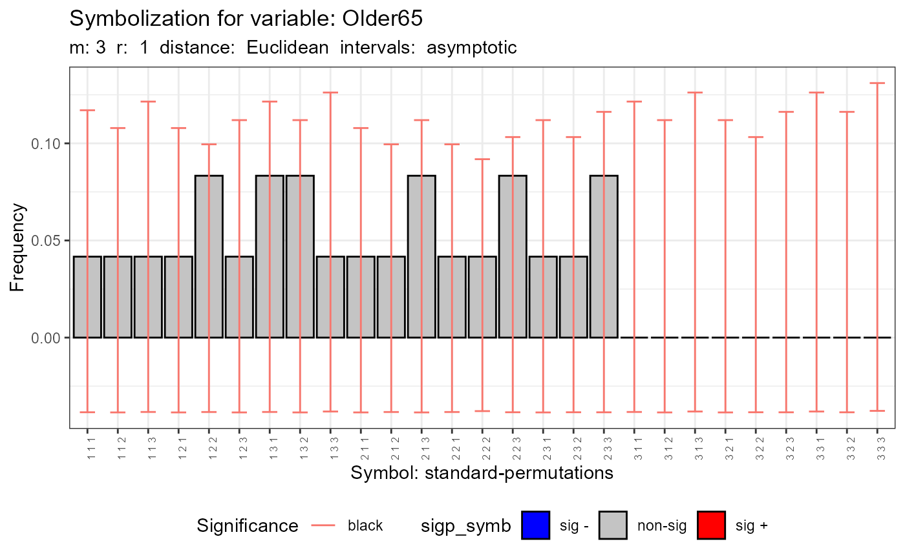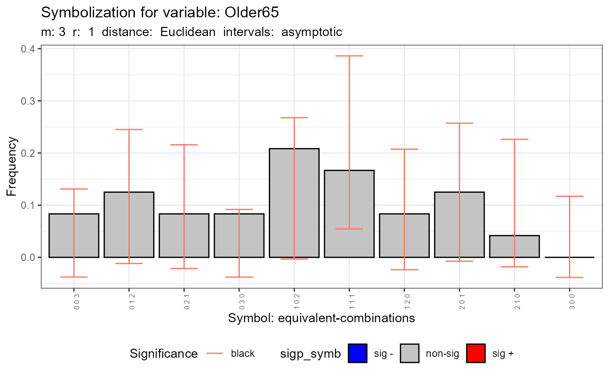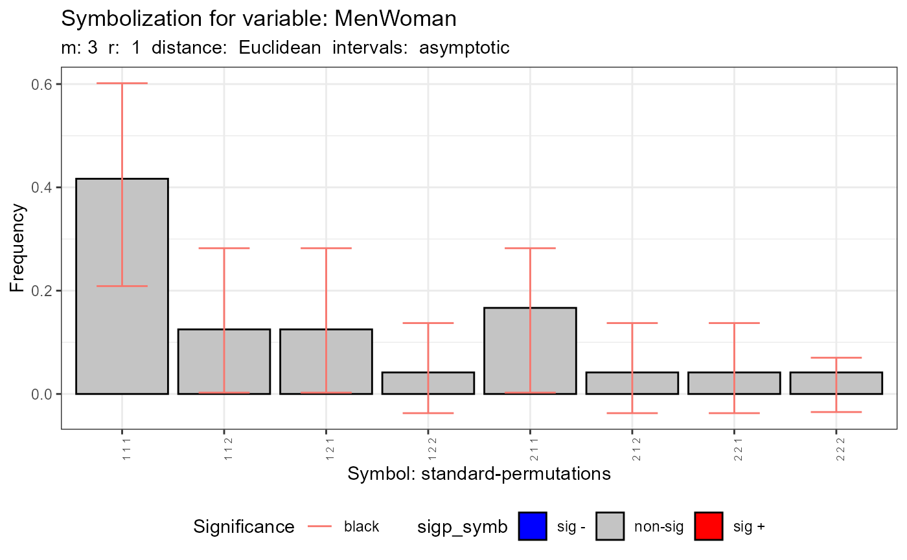#> [[1]]#> #> [[2]]#> #> [[3]]#> #> [[4]]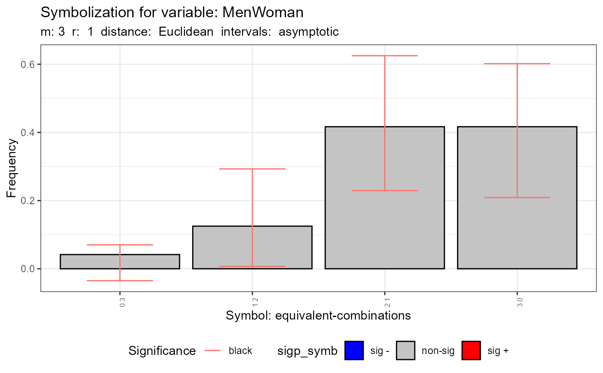#>q.test.mc <- Q.test(formula = f1, data = spain.sf, m = 4, r = 3, distr = "mc", control = list(seedinit = 1111)) summary(q.test.mc)#> <div id="bwbbiqgyic" style="overflow-x:auto;overflow-y:auto;width:auto;height:auto;"> #> <style>html { #> font-family: -apple-system, BlinkMacSystemFont, 'Segoe UI', Roboto, Oxygen, Ubuntu, Cantarell, 'Helvetica Neue', 'Fira Sans', 'Droid Sans', Arial, sans-serif; #> } #> #> #bwbbiqgyic .gt_table { #> display: table; #> border-collapse: collapse; #> margin-left: auto; #> margin-right: auto; #> color: #333333; #> font-size: 16px; #> font-weight: normal; #> font-style: normal; #> background-color: #FFFFFF; #> width: auto; #> border-top-style: solid; #> border-top-width: 2px; #> border-top-color: #A8A8A8; #> border-right-style: none; #> border-right-width: 2px; #> border-right-color: #D3D3D3; #> border-bottom-style: solid; #> border-bottom-width: 2px; #> border-bottom-color: #A8A8A8; #> border-left-style: none; #> border-left-width: 2px; #> border-left-color: #D3D3D3; #> } #> #> #bwbbiqgyic .gt_heading { #> background-color: #FFFFFF; #> text-align: center; #> border-bottom-color: #FFFFFF; #> border-left-style: none; #> border-left-width: 1px; #> border-left-color: #D3D3D3; #> border-right-style: none; #> border-right-width: 1px; #> border-right-color: #D3D3D3; #> } #> #> #bwbbiqgyic .gt_title { #> color: #333333; #> font-size: 125%; #> font-weight: initial; #> padding-top: 4px; #> padding-bottom: 4px; #> border-bottom-color: #FFFFFF; #> border-bottom-width: 0; #> } #> #> #bwbbiqgyic .gt_subtitle { #> color: #333333; #> font-size: 85%; #> font-weight: initial; #> padding-top: 0; #> padding-bottom: 6px; #> border-top-color: #FFFFFF; #> border-top-width: 0; #> } #> #> #bwbbiqgyic .gt_bottom_border { #> border-bottom-style: solid; #> border-bottom-width: 2px; #> border-bottom-color: #D3D3D3; #> } #> #> #bwbbiqgyic .gt_col_headings { #> border-top-style: solid; #> border-top-width: 2px; #> border-top-color: #D3D3D3; #> border-bottom-style: solid; #> border-bottom-width: 2px; #> border-bottom-color: #D3D3D3; #> border-left-style: none; #> border-left-width: 1px; #> border-left-color: #D3D3D3; #> border-right-style: none; #> border-right-width: 1px; #> border-right-color: #D3D3D3; #> } #> #> #bwbbiqgyic .gt_col_heading { #> color: #333333; #> background-color: #FFFFFF; #> font-size: 100%; #> font-weight: normal; #> text-transform: inherit; #> border-left-style: none; #> border-left-width: 1px; #> border-left-color: #D3D3D3; #> border-right-style: none; #> border-right-width: 1px; #> border-right-color: #D3D3D3; #> vertical-align: bottom; #> padding-top: 5px; #> padding-bottom: 6px; #> padding-left: 5px; #> padding-right: 5px; #> overflow-x: hidden; #> } #> #> #bwbbiqgyic .gt_column_spanner_outer { #> color: #333333; #> background-color: #FFFFFF; #> font-size: 100%; #> font-weight: normal; #> text-transform: inherit; #> padding-top: 0; #> padding-bottom: 0; #> padding-left: 4px; #> padding-right: 4px; #> } #> #> #bwbbiqgyic .gt_column_spanner_outer:first-child { #> padding-left: 0; #> } #> #> #bwbbiqgyic .gt_column_spanner_outer:last-child { #> padding-right: 0; #> } #> #> #bwbbiqgyic .gt_column_spanner { #> border-bottom-style: solid; #> border-bottom-width: 2px; #> border-bottom-color: #D3D3D3; #> vertical-align: bottom; #> padding-top: 5px; #> padding-bottom: 5px; #> overflow-x: hidden; #> display: inline-block; #> width: 100%; #> } #> #> #bwbbiqgyic .gt_group_heading { #> padding: 8px; #> color: #333333; #> background-color: #FFFFFF; #> font-size: 100%; #> font-weight: initial; #> text-transform: inherit; #> border-top-style: solid; #> border-top-width: 2px; #> border-top-color: #D3D3D3; #> border-bottom-style: solid; #> border-bottom-width: 2px; #> border-bottom-color: #D3D3D3; #> border-left-style: none; #> border-left-width: 1px; #> border-left-color: #D3D3D3; #> border-right-style: none; #> border-right-width: 1px; #> border-right-color: #D3D3D3; #> vertical-align: middle; #> } #> #> #bwbbiqgyic .gt_empty_group_heading { #> padding: 0.5px; #> color: #333333; #> background-color: #FFFFFF; #> font-size: 100%; #> font-weight: initial; #> border-top-style: solid; #> border-top-width: 2px; #> border-top-color: #D3D3D3; #> border-bottom-style: solid; #> border-bottom-width: 2px; #> border-bottom-color: #D3D3D3; #> vertical-align: middle; #> } #> #> #bwbbiqgyic .gt_from_md > :first-child { #> margin-top: 0; #> } #> #> #bwbbiqgyic .gt_from_md > :last-child { #> margin-bottom: 0; #> } #> #> #bwbbiqgyic .gt_row { #> padding-top: 8px; #> padding-bottom: 8px; #> padding-left: 5px; #> padding-right: 5px; #> margin: 10px; #> border-top-style: solid; #> border-top-width: 1px; #> border-top-color: #D3D3D3; #> border-left-style: none; #> border-left-width: 1px; #> border-left-color: #D3D3D3; #> border-right-style: none; #> border-right-width: 1px; #> border-right-color: #D3D3D3; #> vertical-align: middle; #> overflow-x: hidden; #> } #> #> #bwbbiqgyic .gt_stub { #> color: #333333; #> background-color: #FFFFFF; #> font-size: 100%; #> font-weight: initial; #> text-transform: inherit; #> border-right-style: solid; #> border-right-width: 2px; #> border-right-color: #D3D3D3; #> padding-left: 12px; #> } #> #> #bwbbiqgyic .gt_summary_row { #> color: #333333; #> background-color: #FFFFFF; #> text-transform: inherit; #> padding-top: 8px; #> padding-bottom: 8px; #> padding-left: 5px; #> padding-right: 5px; #> } #> #> #bwbbiqgyic .gt_first_summary_row { #> padding-top: 8px; #> padding-bottom: 8px; #> padding-left: 5px; #> padding-right: 5px; #> border-top-style: solid; #> border-top-width: 2px; #> border-top-color: #D3D3D3; #> } #> #> #bwbbiqgyic .gt_grand_summary_row { #> color: #333333; #> background-color: #FFFFFF; #> text-transform: inherit; #> padding-top: 8px; #> padding-bottom: 8px; #> padding-left: 5px; #> padding-right: 5px; #> } #> #> #bwbbiqgyic .gt_first_grand_summary_row { #> padding-top: 8px; #> padding-bottom: 8px; #> padding-left: 5px; #> padding-right: 5px; #> border-top-style: double; #> border-top-width: 6px; #> border-top-color: #D3D3D3; #> } #> #> #bwbbiqgyic .gt_striped { #> background-color: rgba(128, 128, 128, 0.05); #> } #> #> #bwbbiqgyic .gt_table_body { #> border-top-style: solid; #> border-top-width: 2px; #> border-top-color: #D3D3D3; #> border-bottom-style: solid; #> border-bottom-width: 2px; #> border-bottom-color: #D3D3D3; #> } #> #> #bwbbiqgyic .gt_footnotes { #> color: #333333; #> background-color: #FFFFFF; #> border-bottom-style: none; #> border-bottom-width: 2px; #> border-bottom-color: #D3D3D3; #> border-left-style: none; #> border-left-width: 2px; #> border-left-color: #D3D3D3; #> border-right-style: none; #> border-right-width: 2px; #> border-right-color: #D3D3D3; #> } #> #> #bwbbiqgyic .gt_footnote { #> margin: 0px; #> font-size: 90%; #> padding: 4px; #> } #> #> #bwbbiqgyic .gt_sourcenotes { #> color: #333333; #> background-color: #FFFFFF; #> border-bottom-style: none; #> border-bottom-width: 2px; #> border-bottom-color: #D3D3D3; #> border-left-style: none; #> border-left-width: 2px; #> border-left-color: #D3D3D3; #> border-right-style: none; #> border-right-width: 2px; #> border-right-color: #D3D3D3; #> } #> #> #bwbbiqgyic .gt_sourcenote { #> font-size: 90%; #> padding: 4px; #> } #> #> #bwbbiqgyic .gt_left { #> text-align: left; #> } #> #> #bwbbiqgyic .gt_center { #> text-align: center; #> } #> #> #bwbbiqgyic .gt_right { #> text-align: right; #> font-variant-numeric: tabular-nums; #> } #> #> #bwbbiqgyic .gt_font_normal { #> font-weight: normal; #> } #> #> #bwbbiqgyic .gt_font_bold { #> font-weight: bold; #> } #> #> #bwbbiqgyic .gt_font_italic { #> font-style: italic; #> } #> #> #bwbbiqgyic .gt_super { #> font-size: 65%; #> } #> #> #bwbbiqgyic .gt_footnote_marks { #> font-style: italic; #> font-weight: normal; #> font-size: 65%; #> } #> </style> #> <table class="gt_table"> #> <thead class="gt_header"> #> <tr> #> <th colspan="9" class="gt_heading gt_title gt_font_normal" style>Qualitative Dependence Test (Q)</th> #> </tr> #> <tr> #> <th colspan="9" class="gt_heading gt_subtitle gt_font_normal gt_bottom_border" style>Distribution: mc. Distance: Euclidean</th> #> </tr> #> </thead> #> <thead class="gt_col_headings"> #> <tr> #> <th class="gt_col_heading gt_columns_bottom_border gt_right" rowspan="1" colspan="1">Q</th> #> <th class="gt_col_heading gt_columns_bottom_border gt_right" rowspan="1" colspan="1">p.value</th> #> <th class="gt_col_heading gt_columns_bottom_border gt_right" rowspan="1" colspan="1">k</th> #> <th class="gt_col_heading gt_columns_bottom_border gt_right" rowspan="1" colspan="1">N</th> #> <th class="gt_col_heading gt_columns_bottom_border gt_right" rowspan="1" colspan="1">m</th> #> <th class="gt_col_heading gt_columns_bottom_border gt_right" rowspan="1" colspan="1">R</th> #> <th class="gt_col_heading gt_columns_bottom_border gt_right" rowspan="1" colspan="1">n</th> #> <th class="gt_col_heading gt_columns_bottom_border gt_right" rowspan="1" colspan="1">R/n</th> #> <th class="gt_col_heading gt_columns_bottom_border gt_right" rowspan="1" colspan="1">5k^m</th> #> </tr> #> </thead> #> <tbody class="gt_table_body"> #> <tr class="gt_group_heading_row"> #> <td colspan="9" class="gt_group_heading">Older65 - standard-permutations</td> #> </tr> #> <tr><td class="gt_row gt_right">98.18</td> #> <td class="gt_row gt_right">0.51400</td> #> <td class="gt_row gt_right">3</td> #> <td class="gt_row gt_right">50</td> #> <td class="gt_row gt_right">4</td> #> <td class="gt_row gt_right">50</td> #> <td class="gt_row gt_right">81</td> #> <td class="gt_row gt_right">0.62</td> #> <td class="gt_row gt_right">405</td></tr> #> <tr class="gt_group_heading_row"> #> <td colspan="9" class="gt_group_heading">Older65 - equivalent-combinations</td> #> </tr> #> <tr><td class="gt_row gt_right">53.41</td> #> <td class="gt_row gt_right">0.76400</td> #> <td class="gt_row gt_right">3</td> #> <td class="gt_row gt_right">50</td> #> <td class="gt_row gt_right">4</td> #> <td class="gt_row gt_right">50</td> #> <td class="gt_row gt_right">15</td> #> <td class="gt_row gt_right">3.33</td> #> <td class="gt_row gt_right">405</td></tr> #> <tr class="gt_group_heading_row"> #> <td colspan="9" class="gt_group_heading">MenWoman - standard-permutations</td> #> </tr> #> <tr><td class="gt_row gt_right">23.77</td> #> <td class="gt_row gt_right">0.64000</td> #> <td class="gt_row gt_right">2</td> #> <td class="gt_row gt_right">50</td> #> <td class="gt_row gt_right">4</td> #> <td class="gt_row gt_right">50</td> #> <td class="gt_row gt_right">16</td> #> <td class="gt_row gt_right">3.12</td> #> <td class="gt_row gt_right">80</td></tr> #> <tr class="gt_group_heading_row"> #> <td colspan="9" class="gt_group_heading">MenWoman - equivalent-combinations</td> #> </tr> #> <tr><td class="gt_row gt_right">6.35</td> #> <td class="gt_row gt_right">0.91800</td> #> <td class="gt_row gt_right">2</td> #> <td class="gt_row gt_right">50</td> #> <td class="gt_row gt_right">4</td> #> <td class="gt_row gt_right">50</td> #> <td class="gt_row gt_right">5</td> #> <td class="gt_row gt_right">10.00</td> #> <td class="gt_row gt_right">80</td></tr> #> </tbody> #> #> #> </table> #> </div>#> [[1]] #> #> Qp (mc distrib.) for symbolization based on permutations #> #> data: Variable Older65 m = 4 r = 3 #> Qp = 98.177, df = NA, p-value = 0.514 #> #> #> [[2]] #> #> Qc (mc distrib.) for symbolization based on combinations #> #> data: Variable Older65 m = 4 r = 3 #> Qc = 53.413, df = NA, p-value = 0.764 #> #> #> [[3]] #> #> Qp (mc distrib.) for symbolization based on permutations #> #> data: Variable MenWoman m = 4 r = 3 #> Qp = 23.775, df = NA, p-value = 0.64 #> #> #> [[4]] #> #> Qc (mc distrib.) for symbolization based on combinations #> #> data: Variable MenWoman m = 4 r = 3 #> Qc = 6.3535, df = NA, p-value = 0.918 #> #> #> attr(,"class") #> [1] "spqtest" "list"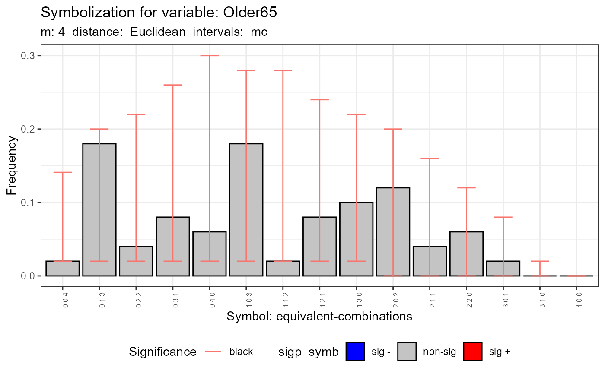#> [[1]]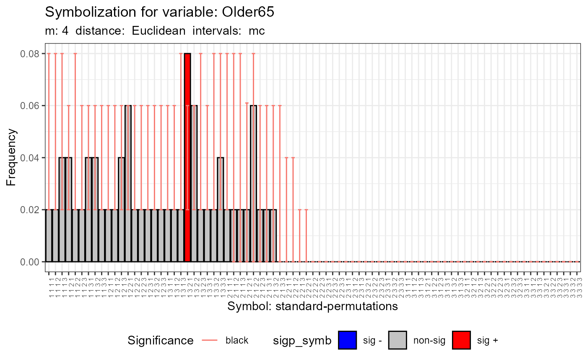#> #> [[2]]#> #> [[3]]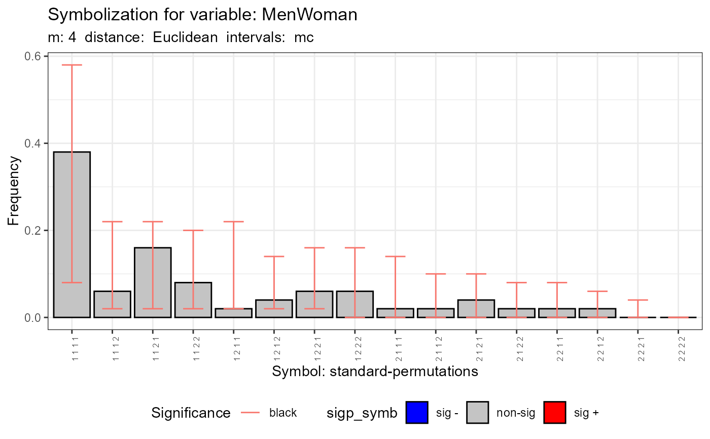#> #> [[4]]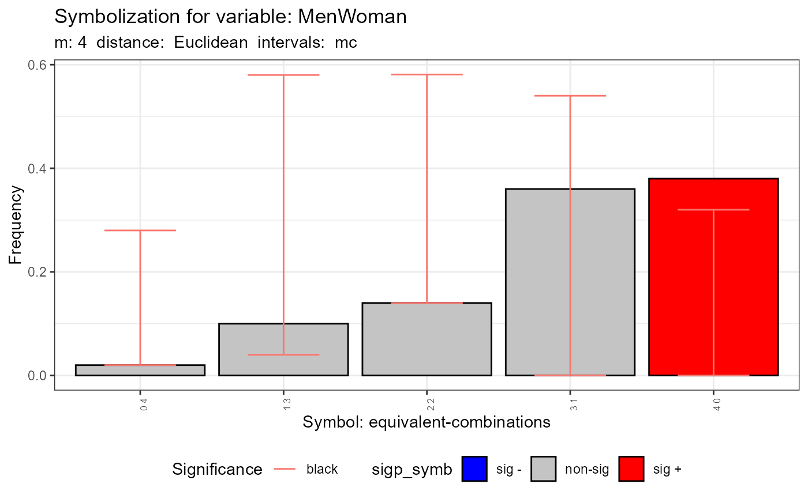#># Case 4: Examples with multipolygons rm(list = ls()) library(sf) fname <- system.file("shape/nc.shp", package="sf") nc <- st_read(fname)#> Reading layer `nc' from data source #> `C:\Users\paezha\Documents\R\win-library\4.1\sf\shape\nc.shp' #> using driver `ESRI Shapefile' #> Simple feature collection with 100 features and 14 fields #> Geometry type: MULTIPOLYGON #> Dimension: XY #> Bounding box: xmin: -84.32385 ymin: 33.88199 xmax: -75.45698 ymax: 36.58965 #> Geodetic CRS: NAD27qb79 <- quantile(nc$BIR79) nc$QBIR79 <- (nc$BIR79 > qb79[2]) + (nc$BIR79 > qb79[3]) + (nc$BIR79 >= qb79[4]) + 1 nc$QBIR79 <- as.factor(nc$QBIR79) plot(nc["QBIR79"], pal = c("#FFFEDE","#FFDFA2", "#FFA93F", "#D5610D"), main = "BIR79 (Quartiles)")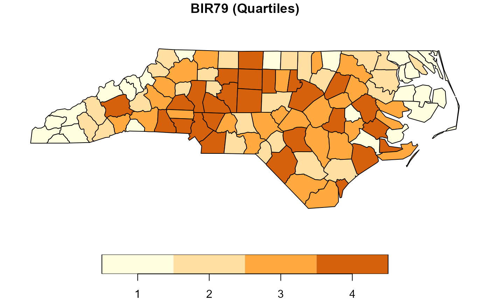sid79 <- quantile(nc$SID79) nc$QSID79 <- (nc$SID79 > sid79[2]) + (nc$SID79 > sid79[3]) + (nc$SID79 >= sid79[4]) + 1 nc$QSID79 <- as.factor(nc$QSID79) plot(nc["QSID79"], pal = c("#FFFEDE","#FFDFA2", "#FFA93F", "#D5610D"), main = "SID79 (Quartiles)")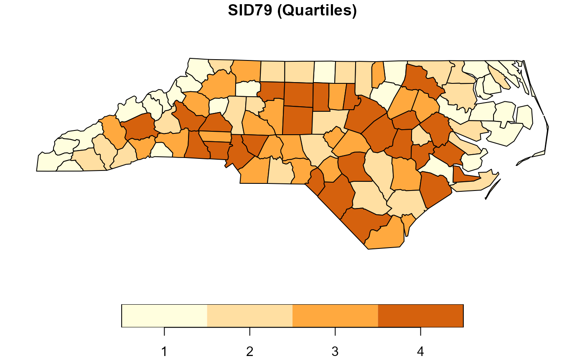f1 <- ~ QSID79 + QBIR79 lq1nc <- Q.test(formula = f1, data = nc, m = 5, r = 2, control = list(seedinit = 1111, dtmaxpc = 0.5, distance = "Euclidean") )#> #> Threshold distance: 4.136225 #> None m-surrounding excluded for exceeding #> the threshold distance #> #> Threshold distance: 4.136225 #> None m-surrounding excluded for exceeding #> the threshold distance#> [[1]] #> #> Qp (asymptotic distrib.) for standard symbolization based on #> permutations #> #> data: Variable QSID79 m = 5 r = 2 #> Qp = 208.18, df = 1023, p-value = 1 #> #> #> [[2]] #> #> Qc (asymptotic distrib.) for equivalent symbolization based on #> combinations #> #> data: Variable QSID79 m = 5 r = 2 #> Qc = 132.37, df = 55, p-value = 2.526e-08 #> #> #> [[3]] #> #> Qp (asymptotic distrib.) for standard symbolization based on #> permutations #> #> data: Variable QBIR79 m = 5 r = 2 #> Qp = 221.81, df = 1023, p-value = 1 #> #> #> [[4]] #> #> Qc (asymptotic distrib.) for equivalent symbolization based on #> combinations #> #> data: Variable QBIR79 m = 5 r = 2 #> Qc = 119.36, df = 55, p-value = 1.168e-06 #> #> #> attr(,"class") #> [1] "spqtest" "list"#> #> Threshold distance: 1.65449 #> Number of m-surroundings excluded for exceeding #> the threshold distance: 1 #> #> Index of spatial observations excluded: 27 #> #> Threshold distance: 1.65449 #> Number of m-surroundings excluded for exceeding #> the threshold distance: 1 #> #> Index of spatial observations excluded: 27#> [[1]] #> #> Qp (asymptotic distrib.) for standard symbolization based on #> permutations #> #> data: Variable QSID79 m = 5 r = 2 #> Qp = 203.12, df = 1023, p-value = 1 #> #> #> [[2]] #> #> Qc (asymptotic distrib.) for equivalent symbolization based on #> combinations #> #> data: Variable QSID79 m = 5 r = 2 #> Qc = 136.32, df = 55, p-value = 7.514e-09 #> #> #> [[3]] #> #> Qp (asymptotic distrib.) for standard symbolization based on #> permutations #> #> data: Variable QBIR79 m = 5 r = 2 #> Qp = 216.84, df = 1023, p-value = 1 #> #> #> [[4]] #> #> Qc (asymptotic distrib.) for equivalent symbolization based on #> combinations #> #> data: Variable QBIR79 m = 5 r = 2 #> Qc = 117.95, df = 55, p-value = 1.738e-06 #> #> #> attr(,"class") #> [1] "spqtest" "list"#> [[1]] #> #> Qp (asymptotic distrib.) for standard symbolization based on #> permutations #> #> data: Variable QSID79 m = 5 r = 2 #> Qp = 56.73, df = 1023, p-value = 1 #> #> #> [[2]] #> #> Qc (asymptotic distrib.) for equivalent symbolization based on #> combinations #> #> data: Variable QSID79 m = 5 r = 2 #> Qc = 48.53, df = 55, p-value = 0.7186 #> #> #> [[3]] #> #> Qp (asymptotic distrib.) for standard symbolization based on #> permutations #> #> data: Variable QBIR79 m = 5 r = 2 #> Qp = 61.677, df = 1023, p-value = 1 #> #> #> [[4]] #> #> Qc (asymptotic distrib.) for equivalent symbolization based on #> combinations #> #> data: Variable QBIR79 m = 5 r = 2 #> Qc = 48.801, df = 55, p-value = 0.709 #> #> #> attr(,"class") #> [1] "spqtest" "list"# Case 5: Examples with points and matrix of variables fx <- matrix(c(nc$QBIR79, nc$QSID79), ncol = 2, byrow = TRUE) mctr <- suppressWarnings(sf::st_centroid(sf::st_geometry(nc))) mcoor <- sf::st_coordinates(mctr)[,c("X","Y")] q.test <- Q.test(fx = fx, coor = mcoor, m = 5, r = 2,control = list(seedinit = 1111, dtmaxpc = 0.5))#> #> Threshold distance: 4.136225 #> None m-surrounding excluded for exceeding #> the threshold distance #> #> Threshold distance: 4.136225 #> None m-surrounding excluded for exceeding #> the threshold distance#> [[1]] #> #> Qp (asymptotic distrib.) for standard symbolization based on #> permutations #> #> data: Variable V1 m = 5 r = 2 #> Qp = 212.57, df = 1023, p-value = 1 #> #> #> [[2]] #> #> Qc (asymptotic distrib.) for equivalent symbolization based on #> combinations #> #> data: Variable V1 m = 5 r = 2 #> Qc = 124.3, df = 55, p-value = 2.811e-07 #> #> #> [[3]] #> #> Qp (asymptotic distrib.) for standard symbolization based on #> permutations #> #> data: Variable V2 m = 5 r = 2 #> Qp = 218.23, df = 1023, p-value = 1 #> #> #> [[4]] #> #> Qc (asymptotic distrib.) for equivalent symbolization based on #> combinations #> #> data: Variable V2 m = 5 r = 2 #> Qc = 125.85, df = 55, p-value = 1.784e-07 #> #> #> attr(,"class") #> [1] "spqtest" "list"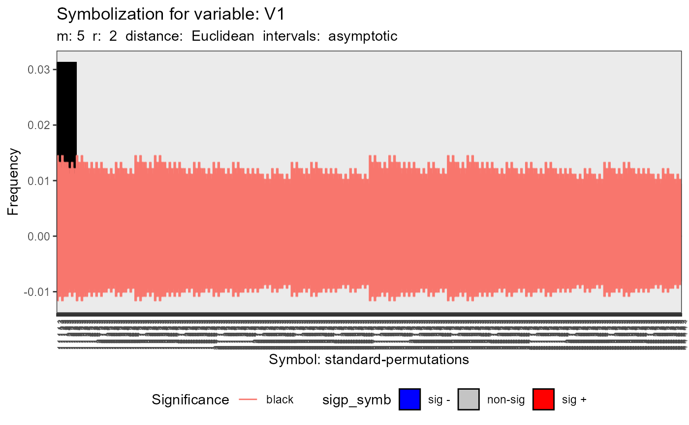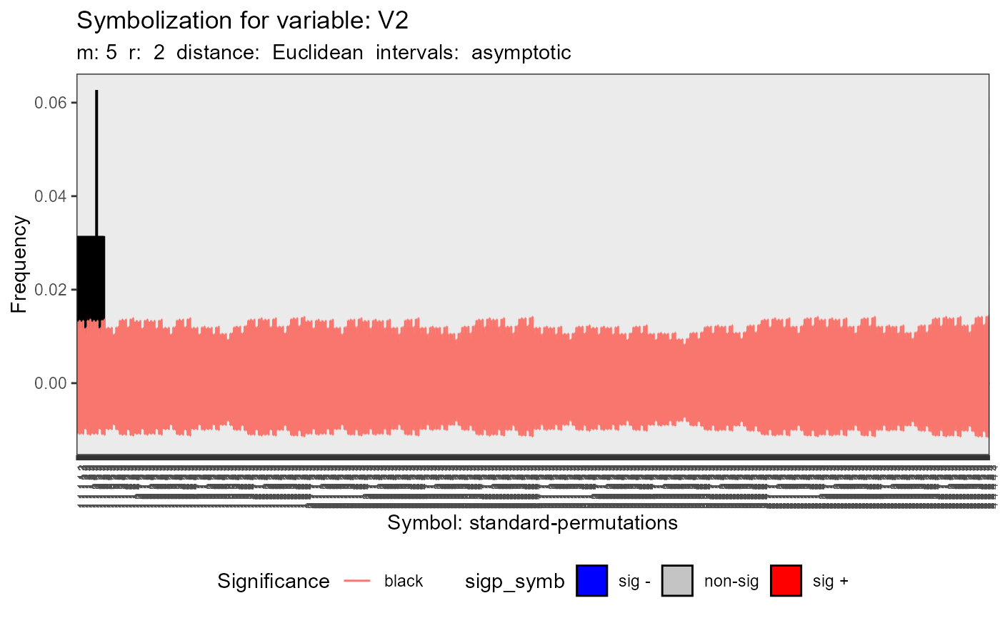#> [[1]]#> #> [[2]]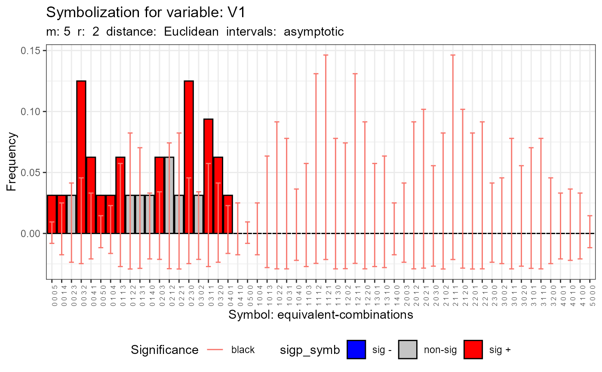#> #> [[3]]#> #> [[4]]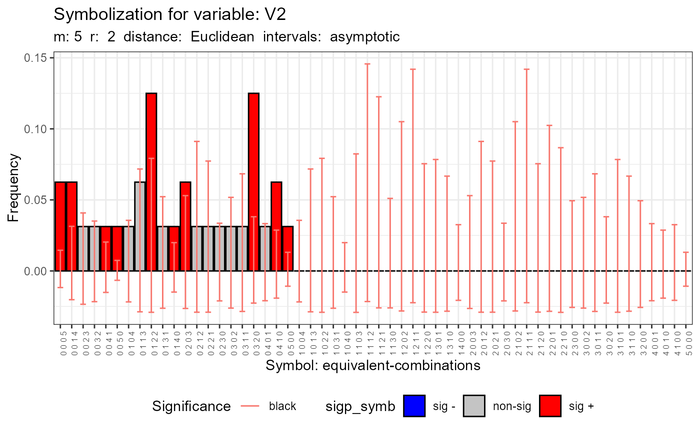#>